庄辉：《祁连山系》记
Qilian Range A Travel Record
Zhuang Hui
2011-2020
祁连山脉
祁连山，原指河西走廊南部山地最北的一支山岭（走廊南山西端，海拔5547米），或称狭义的“祁连山”。“祁连”系匈奴语，匈奴呼天为“祁连”，祁连山即“天山”之意。因位于河西走廊之南，历史上亦曾叫南山，还有雪山、白山等名称。西汉初年，霍去病西征并征服匈奴，“失我祁连山，使我六畜不蕃息；失我焉支山，使我嫁妇无颜色。”匈奴民歌所指“祁连山”即此。后泛指甘肃、青海之间一系列在地质或地貌上相联系的一系列山脉。
祁连山脉，位于中国青海省东北部与甘肃省西部边境，是中国境内主要山脉之一。由多条西北-东南走向的平行山脉和宽谷组成。东西长800公里，南北宽200－400公里，海拔4000－6000米，共有冰川3306条，面积约2062平方公里。
西端在当金山口与阿尔金山脉相接。东端至黄河谷地，与秦岭、六盘山相连。长近1000千米。属褶皱断块山。最宽处在酒泉市与柴达木盆地之间，达300千米。
山脉自西北至东南走向，包括大雪山、托来山、托来南山、野马南山、疏勒南山、党河南山、土尔根达坂山、柴达木山和宗务隆山。山峰多海拔4000－5500米，最高峰疏勒南山的团结峰海拔5808米。海拔4000米以上的山峰终年积雪，山间谷地也在海拔3000－3500米之间。
祁连山区，除山北的走廊地区及河湟谷地以汉族为主外，其它地区皆以藏、哈萨克、蒙古、裕固等牧业民族为主。
—摘自《百科词条》

工作记录
2011年6月20日－8月24日
首次为《祁连山系》作品项目赴西北地区游历。
路线：由兰州市西北方向进入祁连山地区：连城镇、吐鲁沟（永登县），延大通河经往互助土族自治县－岗什卡雪峰（门源县）－卓尔山（祁连县）。由于当地海拨达4000米以上，本人出现了严重的高原反映，只得放弃前行计划，由扁都口进入河西走廊。
经过几周之后的身体调整，再次由祁连山西部的当令山口进入海北藏族自冶州地区：克鲁克湖、托素湖、可可盐湖，青海湖、倒淌河等地，8月中旬翻越日月山至西宁市。
鲁土司衙门
土司是元、明、清授予少数民族首领的世袭官职。鲁土司是明清时甘肃青海边界颇有势力的土司之一。
连城鲁土司的始祖脱欢，是元太祖成吉思汗的后代，为元始祖忽必烈的侄重孙，是元朝宗室，封为安定王兼平章正事，元至正二十八年（公元1368年），朱元璋军队攻打大都（北京）时，元顺帝出逃，脱欢跟随不及，流落河西，明洪武三年（公元1370年）脱欢降明，被安置在连城，为一世土司，因其夫人马氏捕捉达官戳只有功，治地连城，建楼七楹。永乐二十一年因脱欢之孙三世土司失伽屡有战功，升指挥同知，永乐帝给失伽赐姓为鲁，名鲁贤。
鲁土司历经明、清、民国，自1370年一世土司到1932年改土归流，世袭十九世共二十一位土司，历代土司地位显赫，品级很高，多位土司因战功而升任驻守西北的重要将领，官至一品。
鲁土司系蒙古族，信奉藏传佛教，是西北地区权势较大的一个集军事、司法、宗教于一体的地方特殊政权，有生杀大权，拥有土军千余人。连城鲁土司统治永登及周边地区长大560多年，对当地的政治、文化、宗教信仰产生了重要影响。
坐落于大通河畔的鲁土司衙门旧址为第四批全国重点文物保护单位，始建于明洪武十一年（公元1378年），清嘉庆二十三年（公元1818年）十五世鲁纪勋又做了大型修建。现存建筑为工部营造法式建造，均系砖木石结构。
衙门旧址由衙门、妙因寺、官园三部分组成，占地面积3.3万平方米，建筑面积7755平方米。整个衙门依山傍水，坐北朝南，在中轴线上一进数院，利用地理地基，使建筑依次抬高，造成数门直线贯通，院落相连，越进越高，烘托出衙门的高大雄伟和威严之势。颇有王候气魄，有“小故宫”之称。有明代万历年间所植三棵巨大的核桃树，更有奇花异木，有从鲁土司上享堂墓地移来的明代石像生八尊，造型生动，甚为珍贵。这里环境幽雅，佳木葱茏，好鸟啁啾，是历代土司休闲娱乐的地方。
－摘自《百科词条》
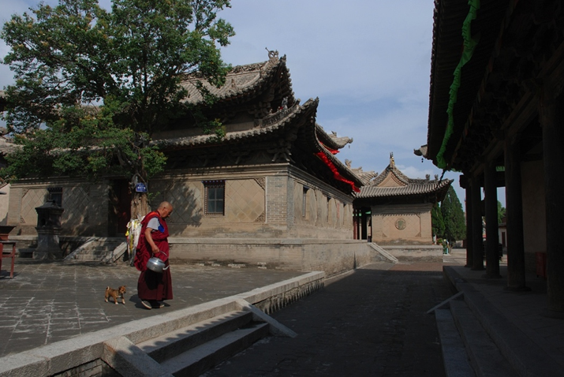
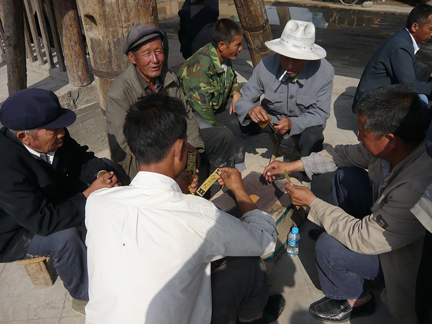
吐峪沟
属祁连山脉的东麓，总面积5848.4公顷，森林覆盖率为79.2%，海拔1998--3165米。
“吐鲁”是古代蒙语，意为“大，好”，或“美好的果园”。吐鲁沟曾为多民族杂居地区。这里受山地气候影响，降雨丰沛，区内有发源于俄博峰的吐鲁河由西北向东南流过，至三岔汇合后，经前沟汇入大通河。
－摘自《百科词条》
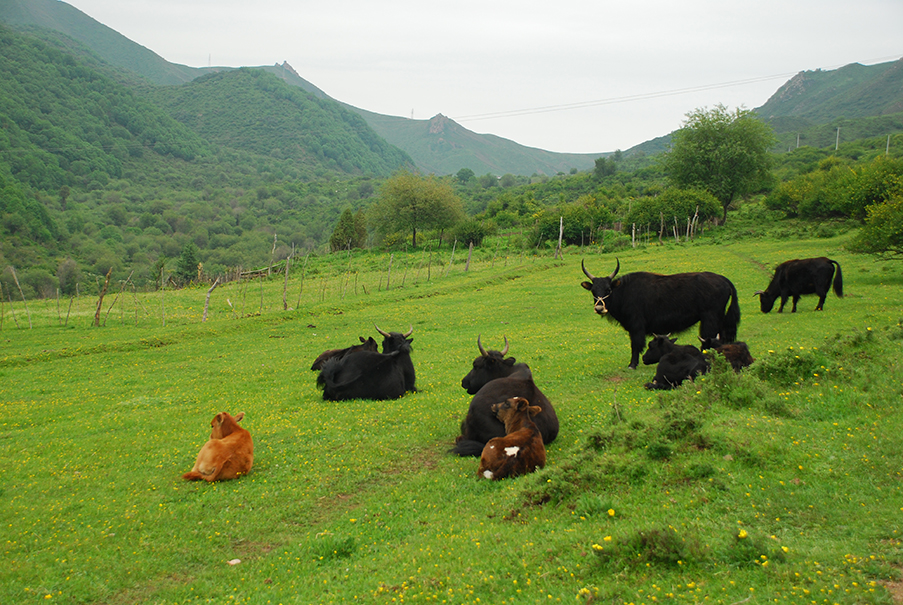
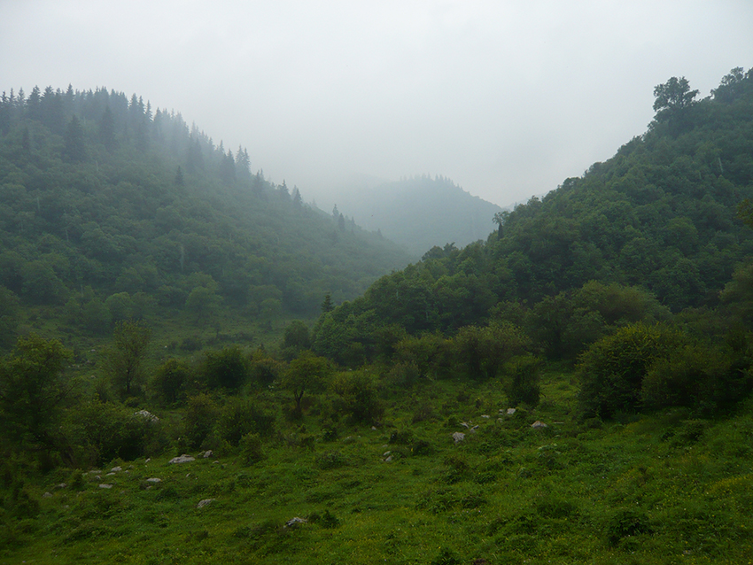
大通河
湟水支流，位于青海省东北部，又称浩门河，宋代在河畔筑大通城后出现今名，以长度与流量论，大通河实为湟水正源。发源于海西州木里祁连山脉东段托来南山和大通山之间的沙杲林那穆吉木岭。向东流经祁连、门源盆地及甘肃的连城、窑街， 穿流于走廊南山—冷龙岭和大通山—达坂山两大山岭之间，于民和县的享堂入湟水，总长554公里。
－摘自《百科词条》
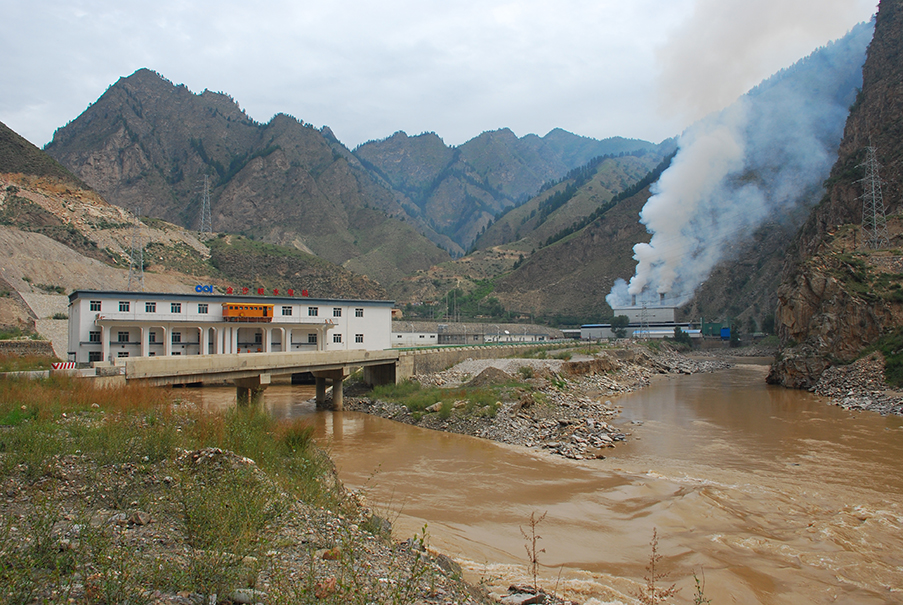
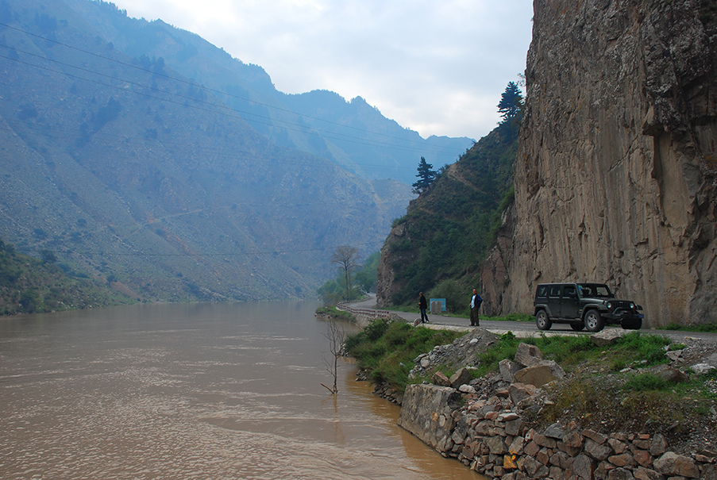
岗什卡雪峰
亦名“冷龙岭主峰”, 海拔5254.5米，雪线高度北坡4200米，南坡4400米。山体主要由偏酸性石英角闪岩、片麻岩、斜长角岩、基性火山岩等组成，在构造上属北祁连山加里东褶皱带。
史册记述，公元345年，酒泉太守马岌对前凉张俊说：“酒泉南山即昆仑，昔日周穆王西征昆仑，会西王母于此山，西王母虎身豹尾，人面虎齿，全身皆白，居雪山洞中，此山系古昆仑支脉，宜立西王母祠，以禅朝庭无疆之福”。得到了张俊的同意，就立王母祠于岗什卡山上，命名“昆仑”。唐穆宗长庆年间（公元807-821年），遣使臣刘元鼎至吐蕃和议时登上了此山。其山日光映雪，雾呈紫色，又名“紫山”。
山下灌林密布色呈青黧，因而古羌语称"闷摩黎山"，在广大的华热藏区所崇拜的十三大山神中，被尊为第一神，享有阿弥岗什卡之盛誉（意为老爷雪山），当地藏族将白色认为吉祥来崇敬。每年农历八月十五日奉祀岗什卡山神，活动规模隆重，不但请喇嘛诵经，还举行赛马、摔跤、射击等活动。还有一个奇特的祭祀内容，每年要用纸糊制一只1.5米高，3米长的大鸟藏语称为"夏杰强琼"（意为百鸟王）登高放飞，为的是纪念西王母和其青鸟使者。据《山海经大荒西经》记载"西有王母之山……有三青鸟，赤首黑目"，郭璞解释说："这三只青鸟都是王母之使者"。后人都把传信使者也称为青鸟，李商隐"蓬山此去无多路，青鸟殷勤为探看"诗句中的典故便由此而来。
－摘自《百科词条》
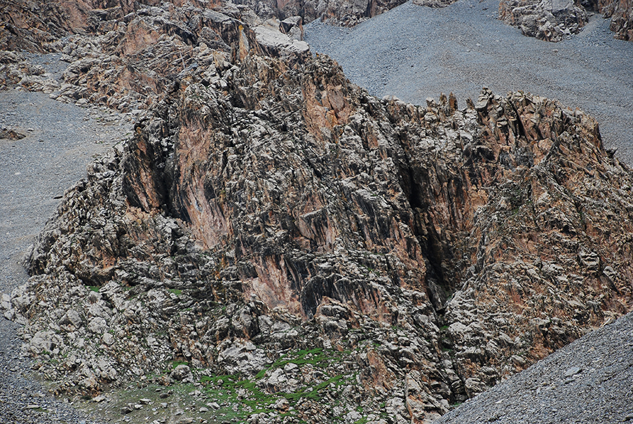
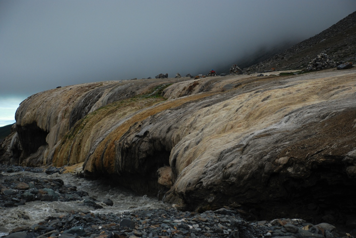
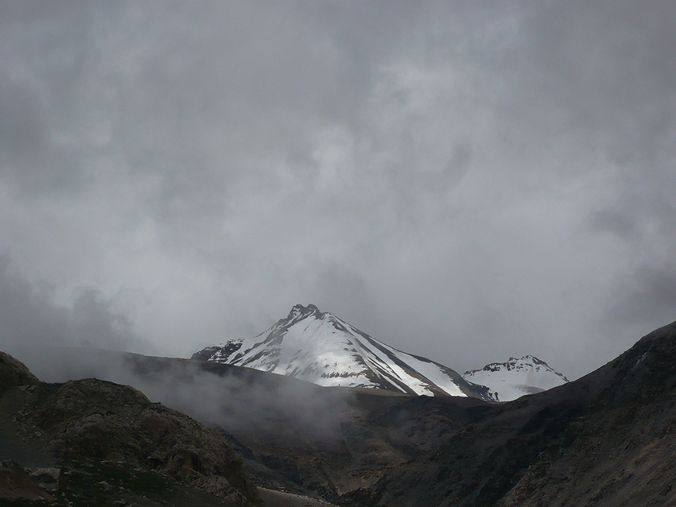
黑河（Heihe River）
发源于祁连山北麓中段，流经青海、甘肃、内蒙古自治区三省（自治区）。下游称弱水（古弱水）。其中内蒙古境内河段称额济纳旗河（额济纳河，西夏语黑水），在居延海消失。黑河是张掖市、临泽县、高台县及下游金塔东部和额济纳旗绿洲等地城市工业、生活用水的主要水源。全长948公里，流域面积4.44万平方公里。是中国西北地区第二大内陆河。
－摘自《百科词条》
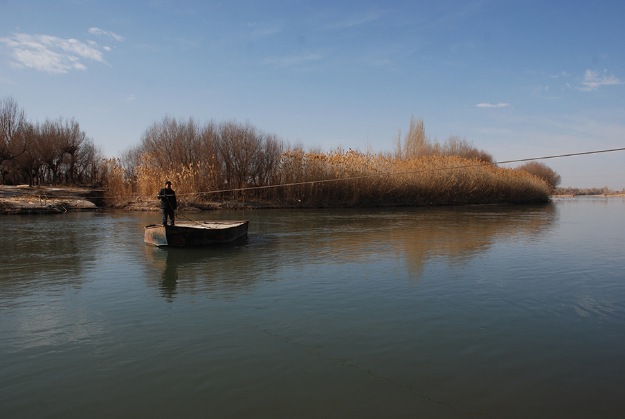
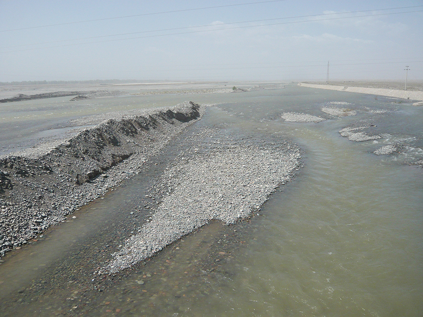
嘉峪关
号称“天下第一雄关”， 位于甘肃省嘉峪关市西5千米处最狭窄的山谷中部，城关两侧的城墙横穿沙漠戈壁，北连黑山悬壁长城，南接天下第一墩，是明长城最西端的关口，历史上曾被称为河西咽喉，因地势险要，建筑雄伟，有连陲锁钥之称。嘉峪关是古代“丝绸之路”的交通要塞。
嘉峪关始建于明洪武五年（1372年），由内城、外城、罗城、瓮城、城壕和南北两翼长城组成，全长约60千米。长城城台、墩台、堡城星罗棋布，由内城、外城、城壕三道防线组成重叠并守之势，形成五里一燧，十里一墩，三十里一堡，百里一城的防御体系。
－摘自《百科词条》
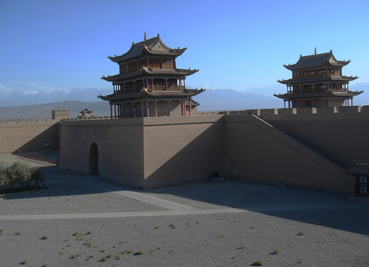
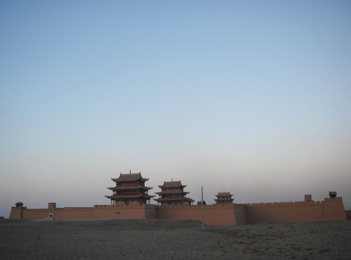
黑山岩画
黑山岩画主要分布于甘肃嘉峪关市西北约20公里处的黑山峪谷的陡崖峭壁之上。整个岩画群总计约150余幅图画，绵延约2公里，刻划时代约从战国时期至明代。这些岩画所处位置，最低者距离沟底仅0．5米，最高者则在5米以上。画面有的一组有几层构成，有的则只是一人或一两个动物构成。画面大小不一，一般高为 0．2—2．4米，宽约0．3一3米。
－摘自《百科词条》
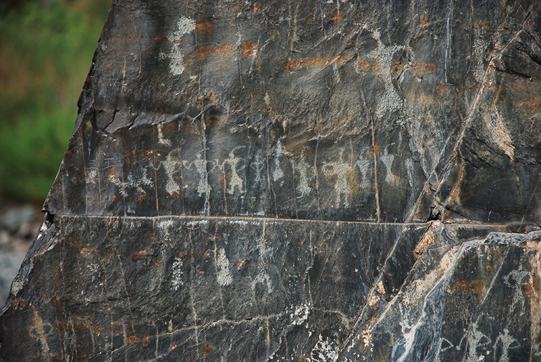
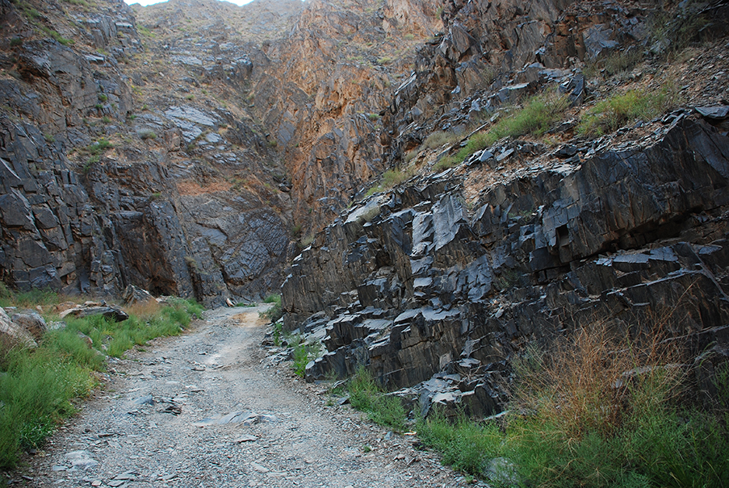
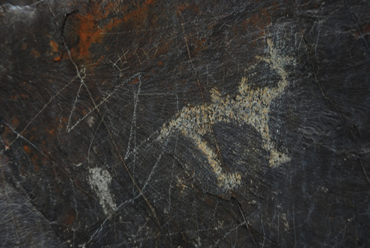
夹边沟
甘肃河西走廊重镇酒泉三十里外，地处祁连山下，荒漠戈壁之中。1957年4月，成立于1954年3月的夹边沟农场改变为劳教农场（行政名称是甘肃省第八劳改管教支队），开始收容甘肃省的机关、企业和学校在大鸣大放期间因右派言论被揪出来的右派分子。
“几乎无降水”，这些长年的生态记录一目了然。事实上，这个小型农场自开办时起就只能接收四五百名劳改人员，因为它只能养活这么多人。但1957年甘肃当局却将两三千名右派源源不断地押送至此，没有人想及以后将会出现什么样的结局。
只是三年半的时间。前一年半是右派们的劳累史，后两年，也就是1959年初到1960年底，则完全是三千右派的饥饿史。在饥荒中，吃尽了荒漠上能吃的和不能吃的所有东西，最后超过二千五百人成了饿殍。
－摘自《百科词条》
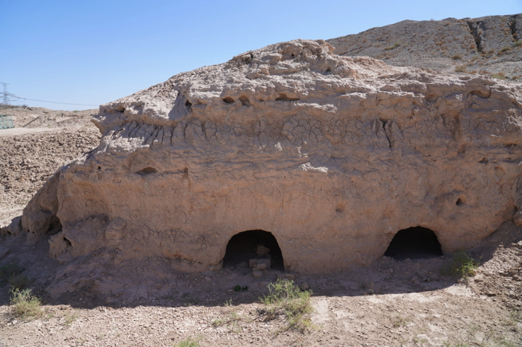
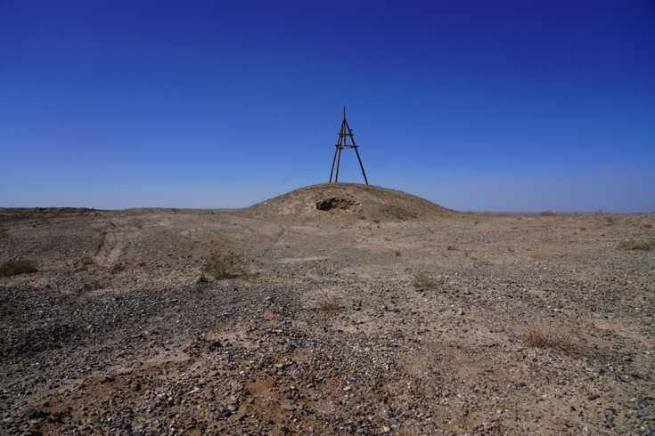
玉门油田
位于甘肃省境内祁连山西部的玉门油田，是中国第一个石油基地。
1938年，玉门油田因抗战所需而开发建设，1939年玉门老君庙第一口油井出油，中国从此甩掉了“无油国”的帽子。1939年至1949年，玉门油田累计生产原油52.4万吨，占同期全国石油总产量的90%以上，奠定了中国石油工业的基础。经过60多年开采，玉门石油产量逐年下降，由最高年份1959年的140.62万吨降至1998年的38万吨。由于石油资源的逐步枯竭，油田企业进行了多次改组改制和经营结构、布局结构的大幅度调整，对近半个世纪以来为服务石油企业而建立起来的地方行政系统、工商企业框架和社会服务体系造成了严重冲击。
特别是1998年以来，地方政府围绕油田、服务油田而兴办的化工、轻工机械、石化下游开发等工业企业，糖酒、五金、饮服等配套的商贸服务企业绝大多数破产倒闭，原市属工商业体系全面崩溃。据统计，1996年全市有市属工业企业90家，经过1998年前后的破产重组，2000年仅有8户企业勉强维持经营。玉门市在石油产业发展的鼎盛时期，城市人口达13万余人。随着石油资源的枯竭,截止2007年有9万多人迁出老市区，留守人员除石油生产工人外，绝大部分是无力搬迁的老弱病残和下岗失业人员。全市下岗失业人员已达3.5万人，其中生活特困群众达1.4万人，城市低保人员6000余人。
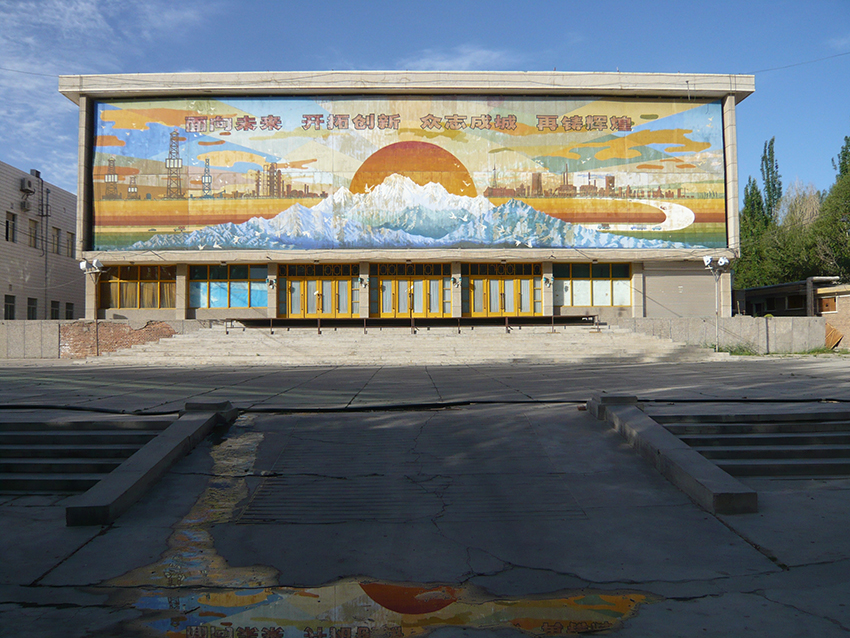
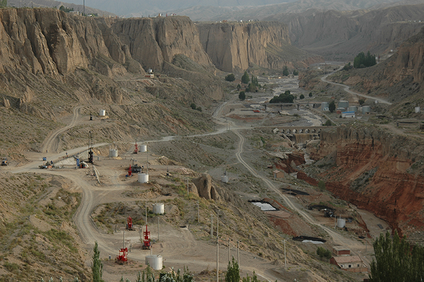
玉门关
始置于汉武帝开通西域道路、设置河西四郡之时，因西域输入玉石时取道于此而得名。汉时为通往西域各地的门户，故址在今甘肃敦煌西北小方盘城。元鼎或元封中（公元前116年一前105年）修筑酒泉至玉门间的长城，玉门关当随之设立。
玉门关遗址地处河西走廊最西端疏勒河南岸，由戈壁、荒漠、河流、湖滩共同组成的自然地理环境中，北与北山相望，南与祁连山呼应，东南距敦煌市约90公里，西距罗布泊东部边缘约150公里。此区域在地理区域上具有东西交通分界的标志地位，自古以来就是东、西方交通的重要通道。
－摘自《百科词条》
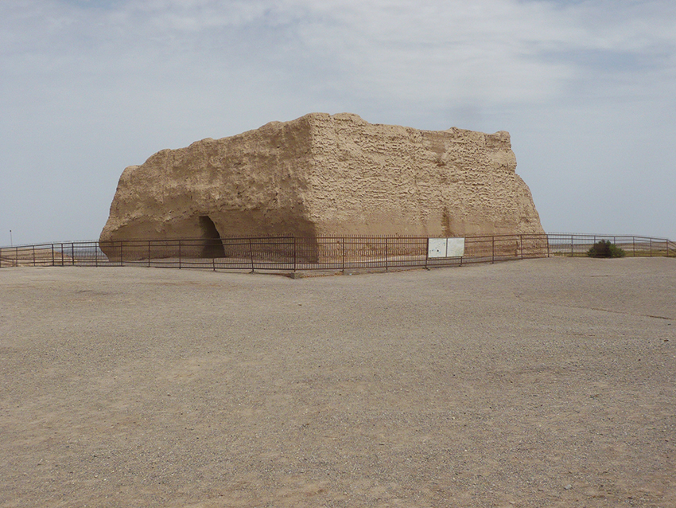
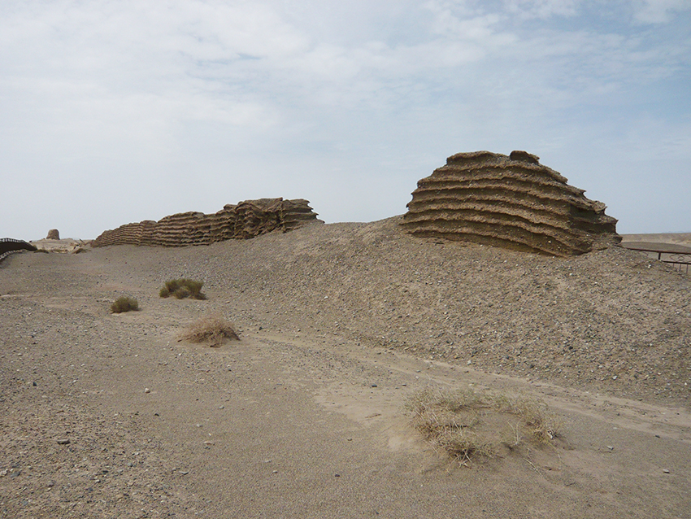
阳关
阳关是中国古代陆路对外交通咽喉之地，是丝绸之路南路必经的关隘。位于甘肃省敦煌市西南的古董滩附近。西汉置关，因在玉门关之南，故名。和玉门关同为当时对西域交通的门户。
宋代以后，因与西方和陆路交通逐渐衰落，关遂废圮。
－摘自《百科词条》
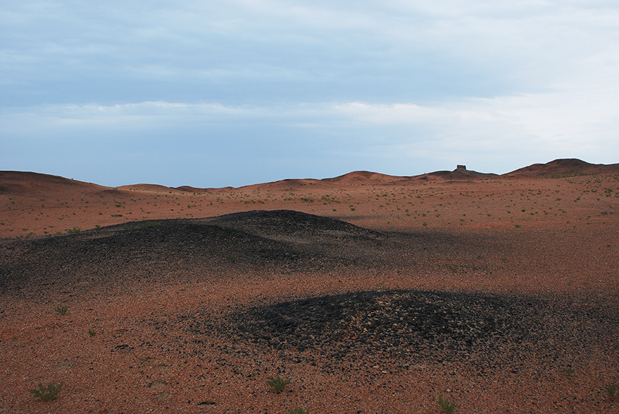
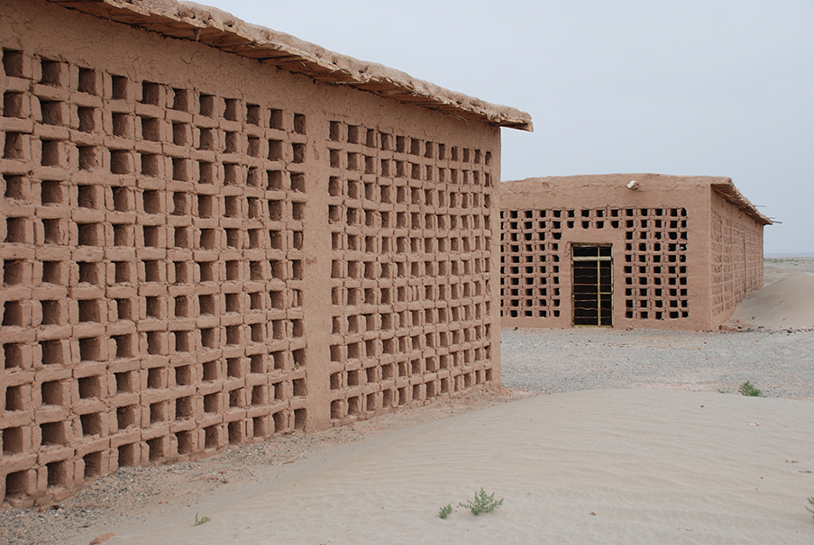
褡裢湖
位于德令哈市西南30公里处，克鲁克湖与托素湖一淡一咸水域相通。湖中飞禽群集的鸟岛，湖畔芦苇。褡裢湖之一的淡水湖其水清澈，里面有鱼，湖边牧草茂盛，牛羊成群。
据神话传说，昔日西王母东巡时在东胜神州傲来花界山顶的一仙石上坐了一会儿，她的一滴月红掉于石上，日久生灵，生出一石卵，石卵又生成一石猴，以后成为齐天大圣。他大闹天宫时，因不知自己是西王母的儿子，偷吃了王母仙桃，难为了摘仙桃的七仙女。后来保唐僧西天取经，获得正果，又得知自己是王母娘娘的儿子，便到这里尽孝，守护母亲的瑶池宫。
－摘自《百科词条》
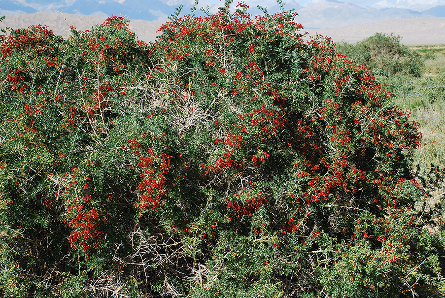
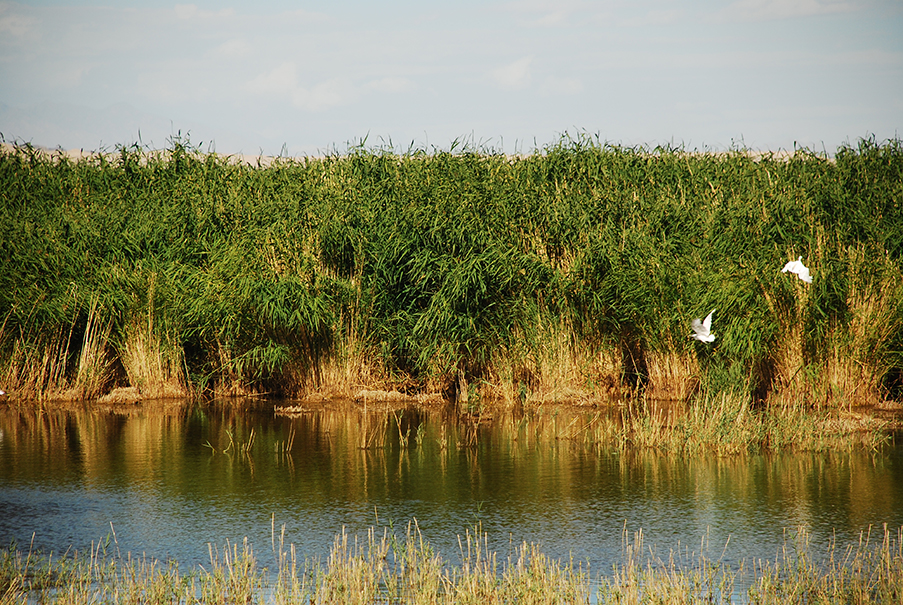
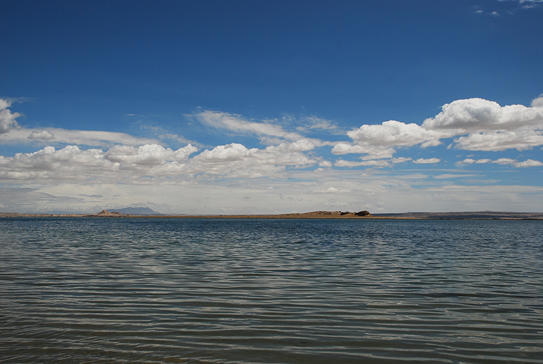
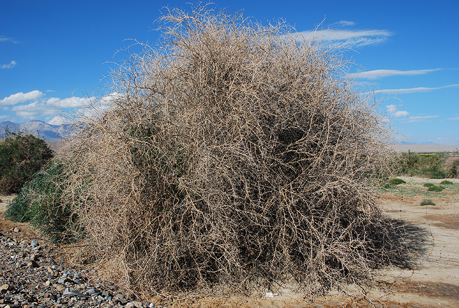
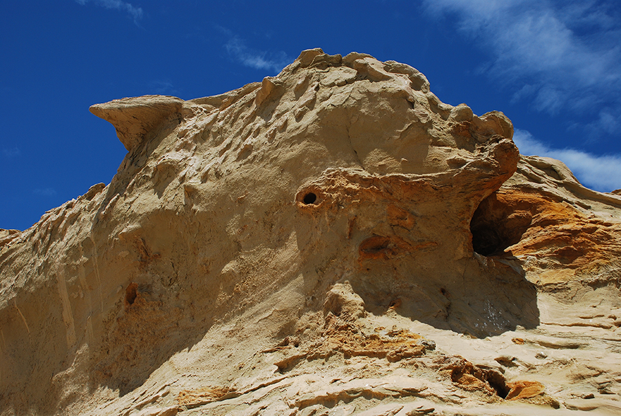
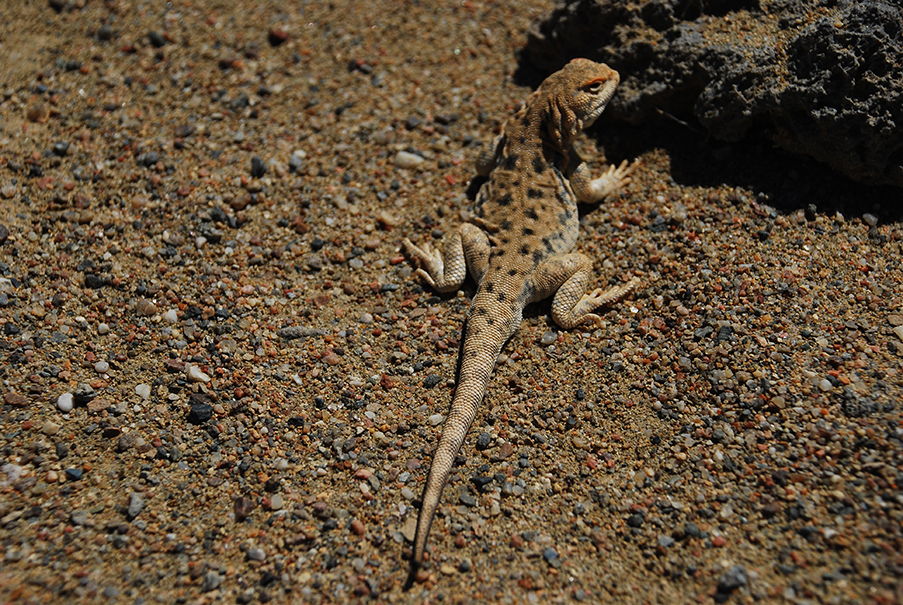
外星人遗址
白公山北邻克鲁克湖（淡水湖），南邻托素湖（微咸水湖），德令哈外星人遗址就坐落在咸水的托素湖南岸。白公山山高200余米，山脚下有三个不规则的三角形岩洞。中间的岩洞最大，洞深约6米。这个洞与通常所见的天然岩洞不同，有明显的人工开凿痕迹。洞内除清一色的砂岩外，不见任何杂质。洞内一根直径40厘米的大铁管从顶上通到洞内，足与百余米长。虽然经过多年的锈蚀，铁管仍然清晰可见。在洞口处还有10余根铁管穿入山体。这些铁管与岩石完全吻合，不像是先凿好洞再放入，而是直接将铁管子插入坚硬的岩石中。
－摘自《百科词条》
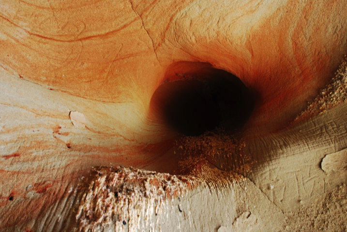
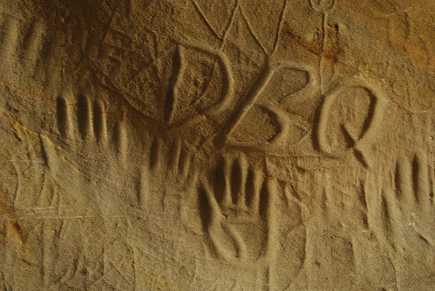
柯柯盐湖
柯柯盐湖，蒙古语青色盐湖之意。位于青海省乌兰县境内牦牛山下一小盆地内。湖盆为祁连山南麓希里沟山间构造断陷盆地，形成于新生代古近纪，呈西北—东南向延伸。湖面海拔3010米，东西长约28公里，南北狭窄，面积119平方公里。湖水为钠盐型，渐趋干涸，现仅东西两端有小面积水面。晶间卤水来源为穿过山前倾斜平原砂砾层后在其前缘遇粘土层而溢出的泉水，泉眼665处以上。盐矿蕴藏量大，每平方公里达750万吨左右，便于露天开采，再生能力强，建有柯柯盐厂进行开采。
－摘自《百科词条》
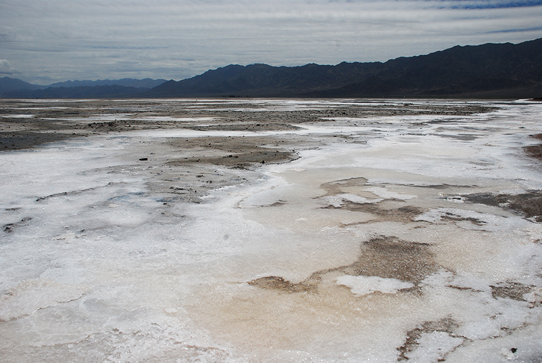
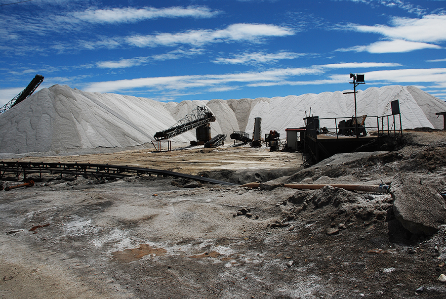
青海湖
藏语名为“措温布”（意为“青色的海”）。位于青藏高原东北部、青海省境内，中国最大的内陆湖。由祁连山脉的大通山、日月山与青海南山之间的断层陷落形成。
青海湖长105公里，宽63公里，湖面海拔3196米，是中国最大的内陆湖泊，地处青藏高原的东北部，西宁市的西北部，位于东经99°36′～100°16′之间，北纬36°32′～37°15′之间。湖的四周被四座巍巍高山所环抱：北面是大通山，东面是日月山，南面是青海南山，西面是橡皮山。这四座大山海拔都在海拔3600～5000米之间。青海湖面积达4456平方公里，环湖周长360多公里，湖面东西长，南北窄，略呈椭圆形。青海湖水平均深约21米多，最大水深为32.8米，蓄水量达1050亿立方米，湖面海拔为3260米。离西宁约200公里。湖区有大小河流近30条。
－摘自《百科词条》
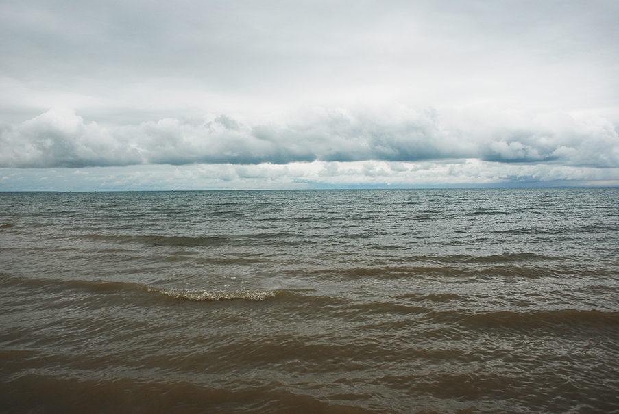
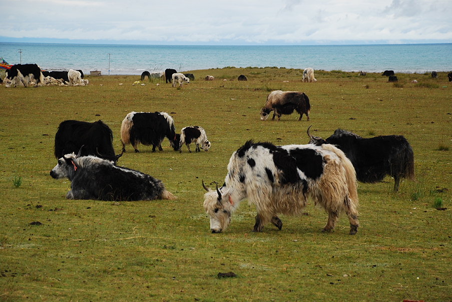
2014年5月30日－7月23日
路线：由永登县翻越乌稍岭进入古浪峡－哈溪镇、毛藏乡、旦马乡（夭祝藏族自治县）－皇城草原（肃南裕固族自治县），进入河西走廊。由玉门妖魔山－魚儿红牧场、石包城、盐池湾（肃北蒙古自治县）等地。
2014年8月18日－9月12日
因为在上一次进山的路途中，隐藏埋放了8部红外线感应拍摄相机，约2个月后，重新返回取走已经拍摄好的影像资料卡。
路线：由内蒙古额济纳旗进入河西走廊西部地区。再经祁连山北部山区盐池湾、魚儿红牧场（肃北蒙古自治县）－毛藏乡桦山、朱家大山（天祝藏族自治县）等地。
毛藏乡
地处祁连山东部腹地，总土地面积为586.36平方千米，。全乡辖4个行政村，13个村民小组，共1182人（2017）。年平均气温-0.2℃，平均降水量为600－700毫米，全年无霜期60天，海拔2579－4874米。林地面积7438.72公顷。境内著名的卡洼掌主峰大雪山是全县最高的山峰，海拔4874米，终年冰雪覆盖，发育着现代冰川，是杂木河的发源地，大小支流遍布全境，是沿山地区地表水和地下水的天然水库。杂木河两岸地势险峻，森林、灌木、草原交叉分布，有马鹿、岩羊、麝、蓝马鸡、雪鸡等十多种野生动物。
－摘自《百科词条》
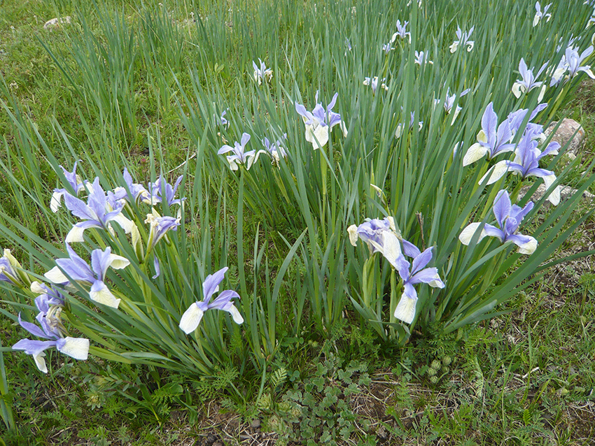
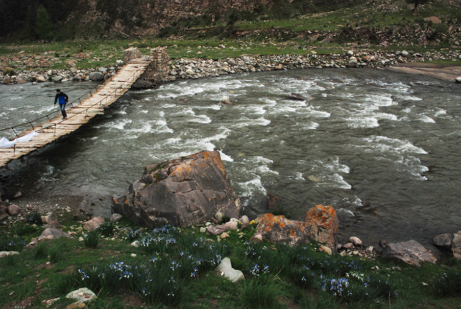
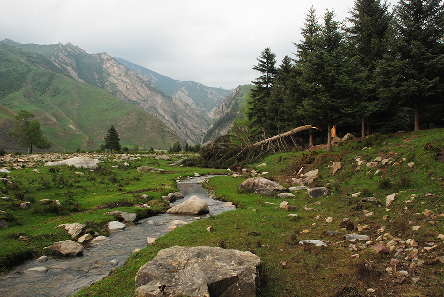
旦马乡
旦马为藏族部落名称。总人口883户，其中藏、土等少数民族1455人，占总人口的40%
境内海拔在2126～4874米之间，主要山峰有大马鸡顶、大直沟达坂、干沙鄂博等。年均气温1.7℃，年均降水量约420毫米，年均日照2878小时，无霜期134天。主要河流有大水河、细水河、响水河、土塔河。有森林10.54万亩，主要树种有云杉、柏、桦、柳、杨等；野生动物有雪豹、白臀鹿、麝、熊、青羊、蓝马鸡、野雉等。
－摘自《百科词条》
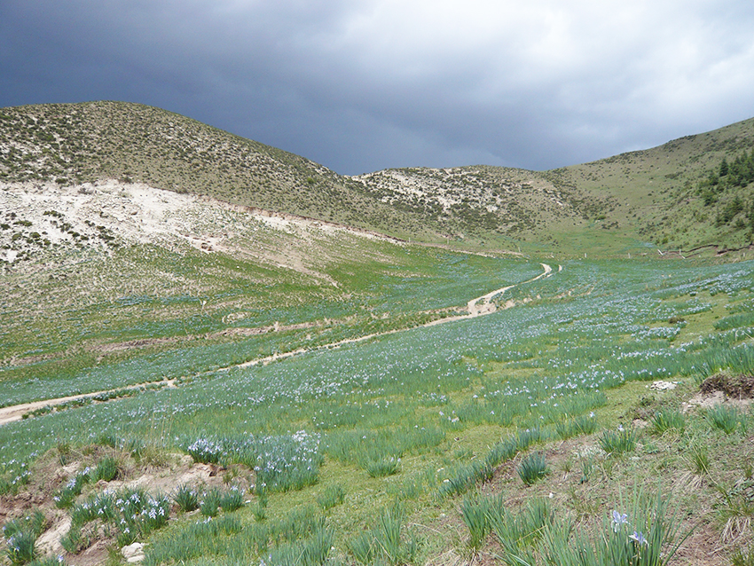
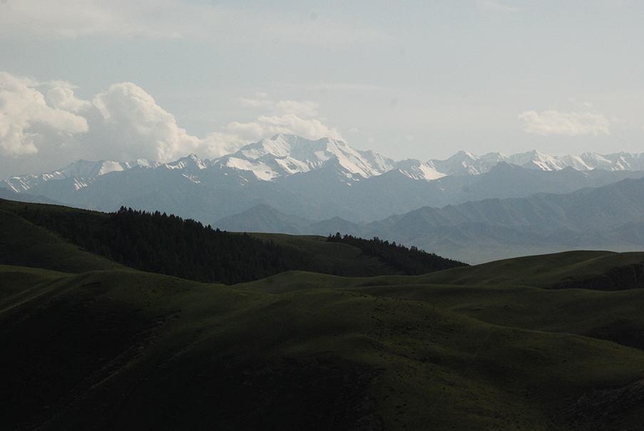
张掖大佛寺
始建于西夏永安元年（1098年）。占地约23000平方米，坐东朝西，现仅存中轴线上的大佛殿、藏经阁、土塔等建筑。大佛殿面阔九间（48.3米），进深七间（24.5米），高20.2米，二层，重檐歇山顶。殿内有彩绘泥塑31具，为西夏遗物。其中卧佛长34.5米，为中国现存最大的室内卧佛像。卧佛后有十大弟子群像，旁有优婆夷、优婆塞及十八罗汉等塑像。藏经阁面阔21.3米，进深10.5米，单檐歇山顶。土塔原名弥陀千佛塔，为砖土混筑密宗覆钵式塔，主塔高33.37米。
－摘自《百科词条》
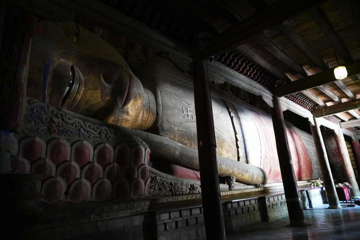
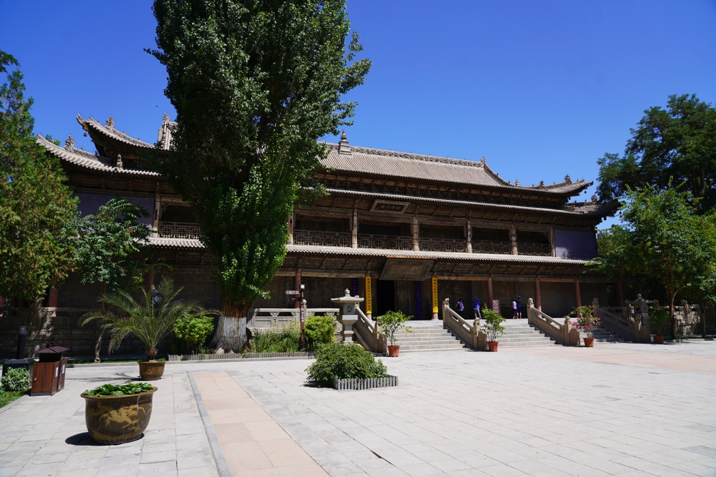
鱼儿红牧场
鱼儿红乡位于肃北蒙古族自治县东南部，当地草场以灌丛草甸草场、盐生草甸草场、荒漠草场类为主，牧草资源丰富，平均海拔3200米，年均降雨量150毫米，年平均气温2℃，全年无霜期162天。
－摘自《百科词条》
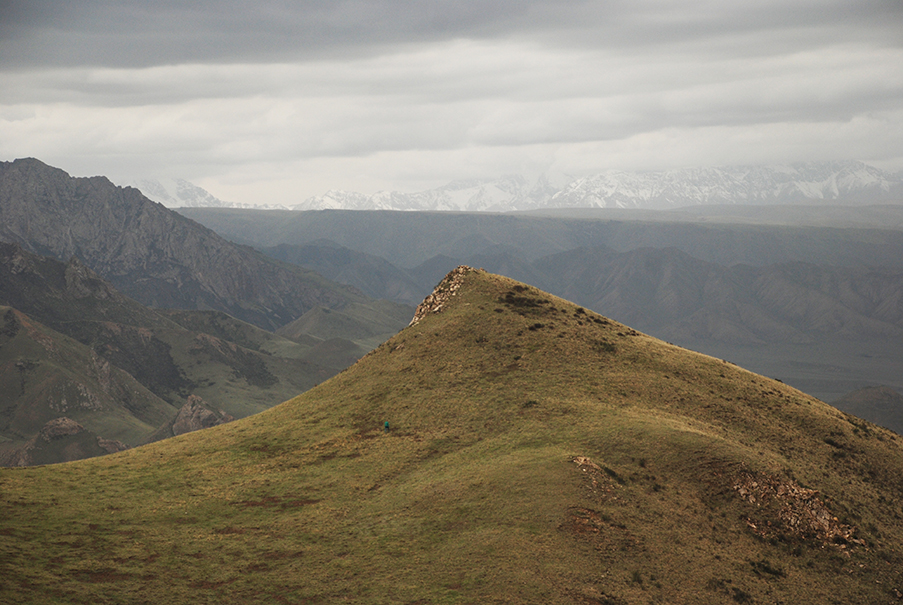
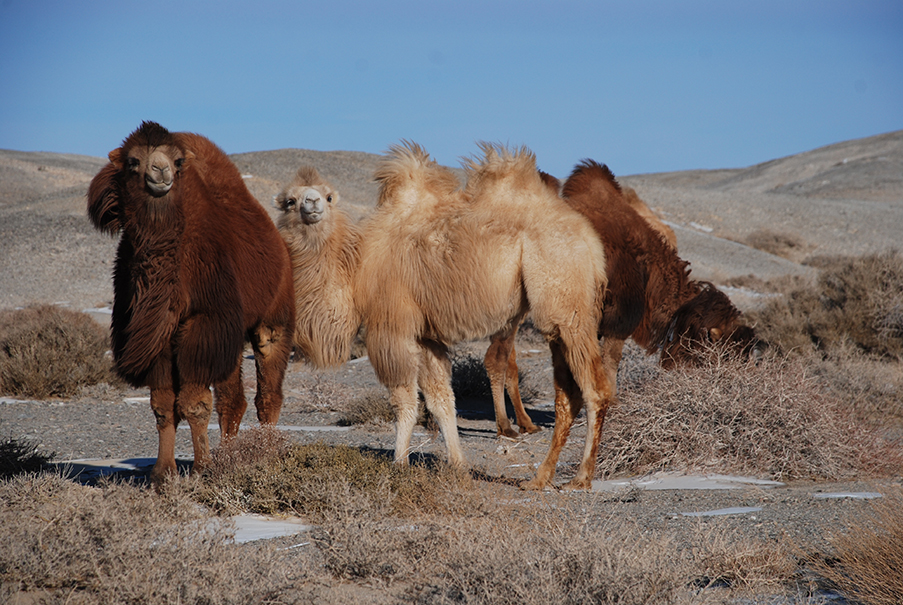
盐池湾
甘肃盐池湾国家级自然保护区地处祁连山西端，青藏高原北缘，于肃北蒙古族自治县东南部，其平均海拔3000米以上，是以白唇鹿、野牦牛、藏原羚等高原珍稀野生动物保护为主的超大型野生动物类型的自然保护区。总面积136万公顷，其中核心区42.16万公顷，缓冲区28万公顷，实验区65.84万公顷。区内地形地貌复杂多样，包罗了冰川冻土、高原寒漠、高山草原、河流湿地等自然景观。
盐池湾保护区有脊椎动物152种，隶属于22目49科。列入《国家重点保护野生动物名录》的38个种，其中Ⅰ类有雪豹、白唇鹿、黑颈鹤等11种；Ⅱ类有盘羊、棕熊、西藏雪鸡等27个种。列入CITES公约的共有28种，其中附录Ⅰ中禁止贸易的种类有雪豹、棕熊、黑颈鹤等8种；附录Ⅱ中限制贸易的种类有狼、猞猁、黑鹳等20个种。
列入中日候鸟保护协定的鸟类有30种，占保护区鸟类的26.32%，其中15种鸟类在保护区繁殖。具有重要直接经济价值的种类有48种，有毛皮用种类、肉用种类、羽用种类和药用种类，其中绝大多数是国家保护动物。
－摘自《百科词条》
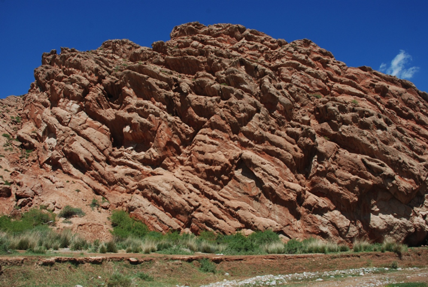
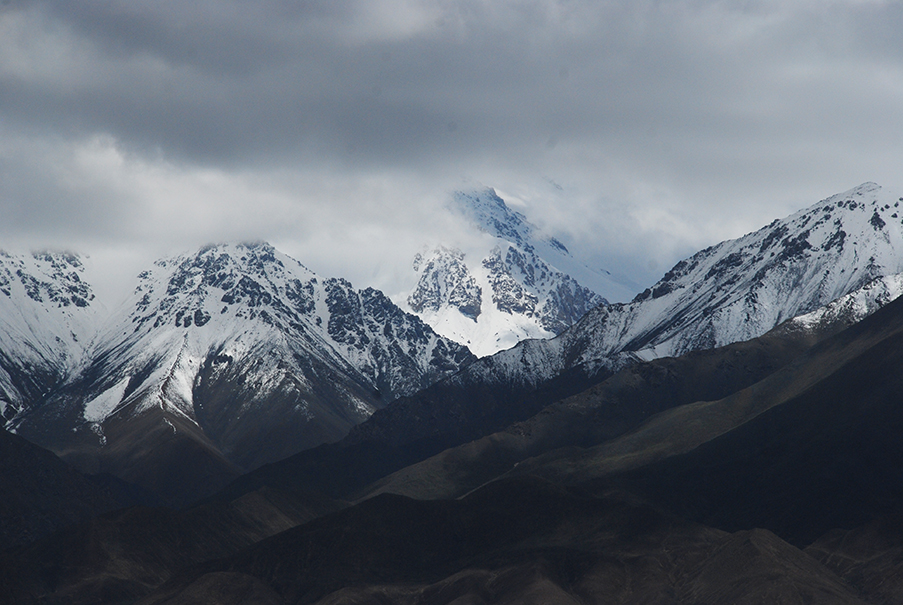
石包城
据史料记载寒江关（石包城）又名壅归镇。石包城，顾名思义，乃是一座用石头包砌起来的古城，修建在悬崖峭壁之上，据说是唐代巾帼枭雄樊梨花的城堡。
石包城地处榆林河上源山间盆地，即石包城盆地内。该盆地东西长约16公里，南北宽10公里许，为肃北蒙古族自治县主要农牧业区域之一。城址巧妙地利用地形，坐落在盆地西部一座相对高度约50米的山岗上，海拔2247米，望上去真有“孤城上与白云齐”之感，其地势险峻，龙蟠虎踞，攻守兼备。
该城向北不远有祁连山西段北麓支脉鹰咀山与鄂博山之间的隘口水峡口通道，向南约25公里为祁连主脉大雪山与野马山之间的龚岔口，由该口向南越龚岔达坂可通青海高原。石包城可谓古代瓜州地区南部重要的军事堡垒和交通要地。
－摘自《百科词条》
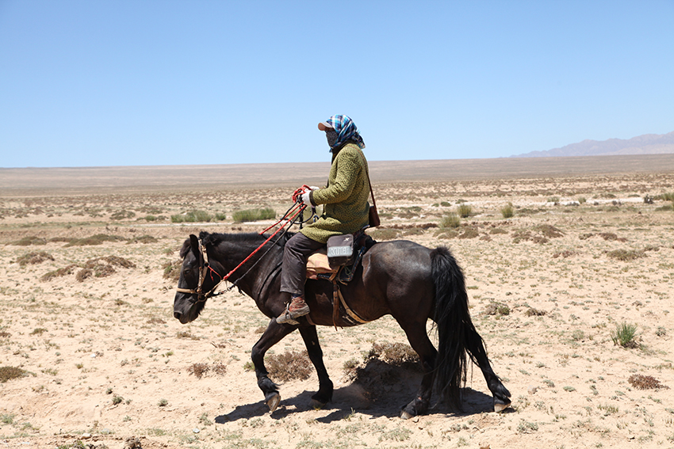
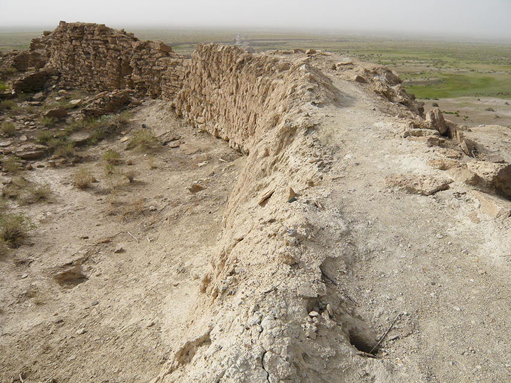
2015年1月3日－2月1日
路线：由山丹县城进入焉支山、军马场（山丹县）－七彩丹霞（张掖市）－昌马乡（玉门市）。翻越当今山口进入柴达木盆地大柴旦镇－乌兰县－西宁市。
焉支山
又称胭脂山、燕支山，现代地理常标注为大黄山 。坐落在河西走廊峰腰地带的甘凉交界处，位于山丹县、永昌县交界。东西长约三十四公里，南北宽约二十公里，属祁连山支脉。
焉支山地势险要，异峰突起，为古今军事要地。自古就有“甘凉咽喉”之称。南麓的大马营滩、大河坝滩，自汉朝以来为历代官马场。
元狩二年（前121年）春，以霍去病为骠骑将军，率领骑兵1万，出陇西（即临洮），渡临津关（青海循化黄河渡口），越祁连山，经大斗拔谷（即民乐县扁都口），入河西走廊，迅速占领匈奴的祁连城（民乐县永固城），与浑邪王战于焉支山，匈奴败走，霍去病乘胜“过焉支山千余里”，俘浑邪王太子和相国、都尉，获休屠王。祭天金人”。匈奴为此悲歌：“失我祁连山，使我六畜不蕃息；失我焉支山，使我嫁妇无颜色。”
－摘自《百科词条》
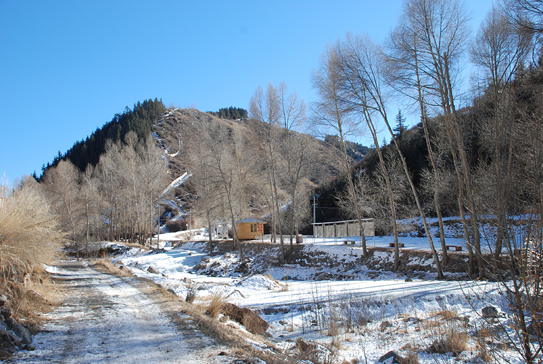
山丹军马场
山丹军马场位于河西走廊中部，祁连山冷龙岭北麓的大马营草原,地跨甘青两省、毗邻三市(州)六县，总面积329 .54万亩，海拔2420-4933米。初始于公元前121年，具有2100多年的悠久历史。
汉武帝时，骠骑将军霍去病西败匈奴，过焉支山至祁连山，就在此屯兵、养马、修筑边防墩台。隋、唐时，在这里设牧监，养军马达10多万匹。元、明时，这里属甘州治，多处扩建牧马营房。清代在这里设置大马营守备。 1940年国民党政府军政部在此设山丹军牧场大马营分场，后正式独立为山丹军牧场。新中国成立后，在此重建中国人民解放军山丹军牧场，现为兰州军区山丹军马总场。
－摘自《百科词条》
七彩丹霞
张掖丹霞地貌在方圆五十平方公里山地丘陵地带，有造型奇特，色彩斑斓，气势磅礴的丹霞地貌。丹霞是指红色砂砾岩经长期风化剥离和流水侵蚀，形成的孤立的山峰和陡峭的奇岩怪石，这里的丹霞地貌发育于距今约2亿年的前侏罗纪至第三纪。
丹霞地质构造是岩石堆积形成的，它是指红色砂岩经长期风化剥离和流水侵蚀，加之特殊的地质结构、气候变化以及风力等自然环境的影响，形成孤立的山峰和陡峭的奇岩怪石，主要发育于侏罗纪至第三纪的水平或缓倾的红色地层中，是巨厚红色砂、砾岩层中沿垂直节理发育的各种丹霞奇峰的总称。
－摘自《百科词条》
东关清真大寺
东关清真大寺是西宁市一座规模最大，保存最为完整的古代建筑。是青海省最大的伊斯兰教寺院，也是西北地区四大清真寺之一。
该寺坐落在西宁市东关大街，洪武年间，明太祖朱元璋分封铺佐他开国有功的将领沐英为西平侯，镇守今甘青地区。当时明王朝实行宗教宽容政策，允许和保护穆斯林的正常宗教活动。由于屯兵、移民等一系列人口迁移，居住西宁的穆斯林居民日渐增多。
为了满足广大穆斯林宗教生活的需要，沐英应回民上层及宗教人士的请求，并奏请朝廷允准，在回民聚居的东关地区动工修建清真寺。
不久，一座占地面积达28000平方米，修有2000余平方米的大殿，两个宣礼塔、一座碑亭院及一些辅助建筑物的清真大寺，在今西宁东关大街拔地而起。
西宁东关清真大寺占地总面积为13602平方米，建筑物雄伟壮观，具有中国古老的建筑艺术和伊斯兰教特色。大寺的原正门，即“前三门”，座南朝北，是一大两小的绿色西式大门，高十米，宽为十五米，门顶横幅匾额上镶有金光闪闪的“西宁东关清真大寺”八个大字（前三门现处在清真大寺临街楼房之前）
－摘自《百科词条》
2015年7月28日－8月28日
路线：由武威市进入祁连乡（天祝藏族自治县）－冰沟丹霞、康乐草原（肃南裕固族自治县）－黑山（嘉峪关市）－镜铁山、祁丰藏族乡（肃南裕固族自治县）。
武威文庙
文庙，也叫圣庙、孔庙，位于武威市区东南隅，始建于明正统四年（公元1439年），历经扩建，规模庞大，号称武威文庙。整个建筑布局对称，结构严谨，是一组造型雄伟的宫阙式建筑群。明清之际被誊为“陇右学宫之冠”，是凉州文人墨客的祭祀孔子的圣地，是目前西北地区建筑规模最大、保存最完整的孔庙，属全国三大孔庙之一。
－摘自《百科词条》
雷台观
位于甘肃省武威市城北两公里处，为武威著名道观之一。始建于清代，观内主要建筑有风神殿、雷祖殿、三皇殿等，整座观宇修建在晋代筑起的雷台之上，台高 8.5米，南北长106米，东西宽60余米。
雷台是一处黄土高台，是明清时期祭祀雷神的地方，故名雷台。
在雷台下东南角发现了一座东汉晚期大型砖墓，据出土马俑胸前铭文记载，雷台汉墓系“守张掖长张君”之墓，约在公元186-219年之间。
出土有金、银、铜、铁、玉、骨、石、陶器等文物231件，铜车马仪仗俑99匹，古钱币近3万枚，被史学界称为“一座丰富的地下博物馆”。
其中以铜奔马艺术价值最高，铜奔马又称““马踏飞燕””，呈发绿古铜色，马高34.5厘米，长45厘米，重17.5公斤，马呈飞奔状，三足腾空，昂首扬尾，右后足下踏一展翅奋飞回首惊视的“风神鸟”龙雀，改变了传统天马的造型手法，又符合力学平衡原理，蕴含丰富的天马文化内涵，铸造技巧精湛，堪称青铜艺术极品。
－摘自《百科词条》
凉州鸠摩罗什寺
始建于后凉麟嘉元年（389年），凉国皇帝吕光册封鸠摩罗什为凉国国师，为安顿国师的身心，下令召募各地能工巧匠，大兴土木修建的寺院，建好后命名为鸠摩罗什寺，是其初入内地安身弘法演教之处，距今已有1600多年的历史，寺内雄立的罗什寺塔是为纪念鸠摩罗什而建，塔内供奉鸠摩罗什的舌舍利。
凉州鸠摩罗什寺是研究五凉文化和汉传佛教、西域佛教的珍贵遗存，也是中国佛教文化名城、中国古代北方佛教中心武威的一大奇观。古人曾经盛赞罗什寺是“由来僧宝摇篮地”，因“弘法利生集英”而“天下名”。鸠摩罗什与玄奘、不空、真谛并称中国佛教四大译经家，位列四大译经家之首，是中国佛教八宗之祖，翻译学鼻祖。
－摘自《百科词条》
祁连乡
位于天祝藏族自治县西北部南岔河流域。
境内地势南高北低，山峦峻峭。海拔在2200～4588米之间。主要山峰有黑鄂博掌、老虎沟顶、灰条沟岭、响水顶、车轮西沟主峰等，平均气温5℃，年平均降水量200～400毫米，年蒸发量1300毫米左右，气候较干燥，相对无霜期125天。境内河流有南岔河、冰沟河。森林面积18.9万亩，主要林木有云杉、桦、杨、柳等；野生动物有旱獭、蓝马鸡、麝、马鹿、石羊等10余种。
－摘自《百科词条》
冰沟丹霞
主要分布在甘肃省具有裕固花乡之称的肃南县境内,总面积达300平方公里。海拔1500-2550米，作为古老的地质遗迹，它发源于侏罗纪至第三纪时期的水平或缓倾的红色地层中，是喜马拉雅造山运动中发育形成的红色岩系，随着地壳的抬升，山坡以崩塌过程为主而后退，保留下来的红色砂岩经过长期的风化剥离和流水侵蚀形成了孤立的奇岩怪石，所以其突出特点为“色如渥丹，灿若明霞”。是由产状水平或平缓的层状铁钙质混合不均匀胶结而成的红色碎屑岩(主要是砾岩和砂岩)，受垂直或高角度解理切割，并在差异风化、重力崩塌、流水溶蚀、风力侵蚀等综合作用下形成的有陡崖的城堡状、宝塔状、针状、柱状、棒状、方山状或峰林状的地形。
－摘自《百科词条》
魏晋壁画墓
位于嘉峪关市东北20公里处的一片广阔无垠的大漠上，散布着1400多座魏晋时期（公元220-419年）的地下壁画砖墓群，这便是著名的魏晋古墓群，被誉为"世界最大的地下画廊"。他东西依酒泉市的果园乡，西北靠新城乡。大漠鼓起的一座座古墓，象大海中荡起的波涛点点。
嘉峪关市文物部门于1972-1979年的七年间先后发掘了13座墓，从墓葬看是家族聚族而葬的墓地。其中8座是彩绘砖壁画墓，共出土壁画砖700余块，现有六号和七号墓室对游人开放。三号墓为单人葬，七号墓为四人合葬，其余的均为二人合葬。魏晋墓分为二室和三室两种，有拱形斜坡式墓道相通，以干砖垒砌而成。六号墓是这十三座墓中画像砖最多，最有代表性的一座，因此嘉峪关市文物部门把它作为唯一公开开放的墓室。
六号墓出土最珍贵的是壁画。已发掘的十三座墓中共出土六百六十幅壁画砖，而六号墓就出土一百三十二幅。占了出土壁画砖总数的百分之二十。所以人们把六号墓看作是整个魏晋墓群的缩影。墓前室共五十五幅，主要是表现墓主人庄园经济生活的。中室共六十五幅，主要表现墓主人家居生活的。后室共十二幅，主要是表现墓主人的财富的。壁画砖内容十分丰富，反映的面很宽，很广。如放牧、农耕、采桑、养蚕、狩猎、屠宰、出巡、奏乐、博弈、舞蹈、繁殖、进食、宴饮、庖厨、酿造、服饰、梳妆、布帛、丝束等。画面反映最多的是农牧业，农业上，从下种、耕犁、耙耱、收割、打场、采桑、养蚕；牧业上，从配种、放牧、屠宰、狩猎都画得十分详细，甚至连每道程序都无一疏漏。这说明农牧业在当时整个经济中的作用，同时也为我们研究魏晋时期的农牧业，提供了一批珍贵而形象的资料。
－摘自《百科词条》
镜铁山 (Jingtie Shan)
海拔5205米，位于北纬39.4°，东经97.8°。地处甘肃省祁连山西段。蕴藏丰富的铁矿资源，并已开采。镜铁山矿地处祁连山脉中部，肃南裕固族自治县境内，发现于1955年，勘探于1956至1958年，始建于1958年，是目前中国生产规模最大，机械化程度最高的黑色冶金坑采矿山之一。
－摘自《百科词条》
祁丰藏族乡
位于河西走廊西部，祁连山北麓。
祁丰，以祁连山水草丰盛而得名。聚居在该乡的藏民原居西康，元时征战到此，后变兵为民定居此地。史称东乐克部落。
祁丰乡地势东南高，西北低，海拔在4000米左右，祁连山雪峰将全乡分为前山地区和后山地区。 境内主要山峰有素珠链（海拔5575米）。
祁丰东纳的藏语属现代藏语三大方言之一的安多生活方言之列，同时这里的藏语中至今仍保留着好多的吐蕃王国时期、或者说是古代藏语中的语素成份。当然，从唐代以前，他们从青藏高原到瓜、沙二州近三百年，而后移居肃州南山的“三山口”一带长期和邻近的汉族地区往来频繁，所以在语言词汇中也加入了不少的汉语成份。如今，祁丰的藏族群众绝大多数人懂藏语而不识藏文。
－摘自《百科词条》
2015年12月12日－2016年1月25日
路线：由西宁市前往塔尔寺（湟中县）－互助土族自冶县－大通回族土族自冶县。过俄博岭至马蹄寺、大风沟、文殊山（肃南裕固族自治县）－布隆吉（安西县）－博罗转井镇进入柴达木盆地。
由冷湖镇－高泉煤矿－蓄集乡（德令哈市）－大冬树山垭口－冰沟、卓尔山、八一冰川（祁连县）－河西走廊返回。
塔尔寺
又名塔儿寺，创建于明洪武十二年（1379年）。得名于大金瓦寺，内为纪念黄教创始人宗喀巴而建的大银塔，藏语称为“衮本贤巴林”，意思是“十万狮子吼佛像的弥勒寺”，位于青海省西宁市西南25公里处的湟中县城鲁沙尔镇。
－摘自《百科词条》
肃南裕固族自治县
中国唯一的裕固族自治县，地处河西走廊中部、祁连山北麓。
肃南裕固族自治县大部地区处于祁连山地，在境内长达400公里，一般海拔2000-3500米，许多山峰高达5000米以上，山势陡峻巍峨，祁连山主峰达5547米。在海拔4700米以上的山地，终年积雪，有冰川分布，是河西农业灌溉的主要水源之一。
这里曾是乌孙、月氏游牧地，后为匈奴所据。
公元前133年至公元前119年，汉武帝派遣张骞出使西域，先后击败了占据河西地区的匈奴王休屠和浑邪，于公元前111年设张掖郡，祁连山一带正式归入中原版图。其后河西回鹘（裕固族先民）曾攻入甘州，随后占据河西走廊西部，并立国，设牙帐于张掖，统治河西约1400余年。
－摘自《百科词条》
当金山口
位于青海省西北部阿尔金山与祁连山相连接处。蒙语“当根库特勒”的转译词，意为“独山口”。海拔3648米，南坡平缓，北坡陡。周围牧草丰盛，为优良夏季牧场。为青海西部地区通往甘肃河西走廊和新疆的要冲，唐朝称之为“匈门”。古时为丝绸之路南线羌中道的重要隘口，一向被视为“青海北大门”。
－摘自“美篇”《回家---冷湖石油基地遗址》作者：西域骑都尉
柴达木盆地Tsaidam Basin
柴达木盆地为高原型盆地，地处青海省西北部，主要在海西蒙古族藏族自治州，是一个被昆仑山、阿尔金山、祁连山等山脉环抱的封闭盆地，介于90°16′E-99°16′E、35°00′N-39°20′N之间。盆地略呈三角形，东西长约800千米，南北宽约300千米，面积约24万平方公里，为中国三大内陆盆地之一。
－摘自《百科词条》
大冬树山垭口
祁连山冰沟
卓尔山
卓尔山属于丹霞地貌，由红色砂岩、砾岩组成。藏语称为“宗穆玛釉玛”，意为美丽的红润皇后。站在卓儿山顶视野极度开阔，四周没有任何遮拦，山对面是一山尽览四季景色的牛心山，左右两侧分别是拉洞峡和白杨沟风景区，背面是连绵起伏的祁连山，山脚下滔滔八宝河像一条白色的哈达环绕在县城周边……传说中卓尔山与祁连的镇山之山--阿咪东索（牛心山）是一对情深意重的情侣，默默守候在八宝河两岸，共同护佑着祁连的山山水水。
－摘自《百科词条》
八一冰川
又称小沙龙冰川，位于位于青海省海北藏族自治州祁连县野牛沟乡，祁连山中段走廊南山的南坡，是中国第二大内陆河黑河流域的源头。
冰川海拔4828 m，长度2.2 km，面积2.81 km2。
－摘自《百科词条》
2016年7月23日－8月15日
路线：由甘南藏族自治州进入祁连山东部地区同仁县－文都大寺、街子镇（循化撒拉族自治县）－坎布拉镇、康杨镇（尖扎县）－化隆回族自冶县－贵德县。
瞿昙寺（qú tán sì）
位于青海省海东市乐都县城南21公里处的马圈沟口，面朝瞿昙河，背靠罗汉山，北依松花顶，南对照碑山。藏语称“卓仓拉康果丹代”，又称“卓仓多杰羌”，意为“卓仓持金刚佛寺”，始建于建于明洪二十五年（1392年），是一座藏传佛教格鲁派寺院。该寺因所藏珍贵文物以及巨幅彩色壁画而闻名。瞿昙寺是典型的明代早期的官式建筑群。历史上瞿昙寺曾领属十三寺。
－摘自《百科词条》
拉卜楞寺
位于甘南藏族自治州夏河县城西0.5公里处。本名噶丹夏珠卜达吉益苏奇贝琅，简称扎西奇寺，是中国藏传佛教（即喇嘛教）格鲁派（黄教）六大寺院之一，一般称拉卜楞寺。第一世嘉木样阿旺宋哲大师创建于清康熙四十八年（1709）。康熙五十三年（1714）建立“拉章”（即嘉木样佛宫），“拉章”音变为“拉卜楞”，意为寺院最高活佛府邸。
寺院坐北向南，占地总面积86.6万平方米，建筑面积40余万平方米，主要殿宇90多座，包括六大学院、16处佛殿、18处昂欠（大活佛宫邸）、僧舍及讲经坛、法苑、印经院、佛塔等，形成了一组具有藏族特色的宏伟建筑群，房屋不下万间。
－摘自《百科词条》
甘加草原
甘加草原属于草甸草原，平均海拔在3000米以上，是甘南藏族自治州的主要畜牧业基地之一。
－摘自《百科词条》
隆务寺
位于青海省黄南藏族自治州府所在地隆务镇镇西山脚下，地处隆务河中游河畔，气候宜人，属全国重点文物保护单位。“隆务”系藏语。在安多地区，其规模、地位、影响仅次于甘肃省的拉卜楞寺和青海省的塔尔寺。
据《安多政教史》记载，早在元大德五年(1301年)，这里已建有藏传佛教萨迦派小寺，至1426年前后，当地名僧三木旦仁钦与其胞弟罗哲森格，维修并扩建了该寺。三木旦仁钦的祖父阿米拉杰出生于前藏念唐拉山下的丹科绒吾，是一位专修明咒的瑜伽师，并擅长医术。他受大元帝师八思巴的差遣，来到隆务，其子隆钦多代本为隆务土官，生有9子，长子即为三木旦仁钦。他自幼出家，曾拜夏琼寺(今青海化隆县境内)创建者顿珠仁钦为师，并受比丘戒。
顿珠仁钦也是格鲁派创始人宗喀巴的启蒙老师。其后，三木旦仁钦以当地萨吉达百户为施主，正式建成隆务寺。
－摘自《百科词条》
热贡艺术
公元10世纪末至13世纪初，是整个藏传佛教“后弘期”，是藏传佛教美术的转变期，也是热贡艺术的发源时期。这一时期，日渐民族化的藏传佛教已经取得了广泛信仰，因此，作为其形象说教的藏传佛教美术，也开始自觉地从外来风格向符合本民族审美习惯的方向转变。
转变期的藏传佛教美术遗存，比较丰富，以绘画而论，如阿里古格王国的《历代赞普和王子世系像》壁画，造型质朴，设色单纯而稳重，呈现出浓厚的西藏高原的文化色彩。还有日喀则那当寺的《那当建庙喇嘛》、《滚嘎吉泽喇嘛》等富于装饰风味的唐卡。
热贡艺术也发源于雪域文化的中心西藏地区，但主要是先后三方面渊源而来：一是藏拉多的年智合尖措三兄弟在尼泊尔学画后到安多热贡定居传播佛画艺术；二是在四、五世纪时萨迦派智合那哇及其徒弟们在热贡地区传播佛画艺术；三是1710年桑俄才培修建拉卜楞寺时，他的曼唐派画法传人热贡地区，所以源渊的不同使热贡艺术的画匠们有各自的特点。
－摘自《百科词条》
吾屯下寺
吾屯下寺属国家级文物保护单位，位于青海省黄南藏族自治州同仁县隆务镇以北7公里的吾屯村。这里是藏族“热贡艺术”的发祥地。已有600多年历史的吾屯下寺殿堂众多，装饰华丽，寺内收藏有大量精美的唐卡、堆绣、雕塑等艺术品，具有较高的文物、艺术价值。
－摘自《百科词条》
郭麻曰古寨
位于青海省同仁县城区以北8公里处。古寨城墙以夯土板筑，呈长方形，东西长220米，宽180米，开东、西、南三门，东门为正门，寨内仍有土民居住，巷道布局星罗棋布，错综复杂，如进入迷宫一般。
每一处寨门顶上都设置嘛呢经轮，是古寨建筑独具特色的地方。为改善狭小的寨内空间，当地居民均修建了二层木结构楼房，和青海乡村民居庭院宽敞的特点形成了反差。寨内民居庭院多为四合院式，房屋为土木结构平顶房，一般民居都有飞椽花藻之类。屋内一般以木板作隔扇，室内有护炕木板、护墙木板墙围，且多雕花草于其上。房屋一般面阔三间，正面以木板隔墙并装上木板条方格小花窗。佛堂设在二楼，佛堂所在的房屋一般都是上房，和佛堂不同向的两边厢房一般做卧室。院落中央一般都有竖挂经幡的旗杆，还设有桑台，具有明显的藏式特点。
－摘自《百科词条》
十世班禅故居
是第十世班禅额尔德尼·确吉坚赞出生的地方，1938年农历正月初三，班禅大师诞生在此地，大师祖籍西藏萨迦，元初来循化，明代起为世袭百户，清末升为千户，管辖“文都七族”。班禅故居门前两棵老百杨高耸挺拔，故居共分三院，东院为停车场、杂物房、仓库等，西院为班禅大师旧居，其老厨房靠柱子系有哈达的地方，是班禅大师诞生之地，东院为两层的藏式楼房，楼北正中为大师颂经的佛堂，其内有班禅大师的佛像，其左侧为大师的卧室和会客房，整个建筑错落有致，层次分明，极具藏族风情。大师不仅受藏族同胞爱戴，同样在省内外，广受各族群众的爱戴，故居现已成为旅游胜观光者和佛教徒的朝拜之地。
－摘自《百科词条》
街子清真大寺及骆驼泉
街子清真大寺珍藏着撒拉族先民700年前东迁时带来的一部手抄本《古兰经》，据专家考证于公元8世纪手抄成本，距今已有1300多年历史。对这部《古兰经》《人民日报》曾于1982年1月3日作过这样的介绍：“这种年代久远版本珍贵的《古兰经》世界上仅存三部”。
相传，在700年前，中亚撤马尔罕地方，居住着一个创建过英雄业绩的部落，他们是乌古斯撒鲁尔的一支。内有尕勒莽和阿合莽兄弟二人，因他们在部落中威望很高，便引起撒马尔罕国王的忌恨，千方百计设法陷害他们，决心要置他们于死地。兄弟二人得到先哲的启示，率领18个族人，牵了一峰白骆驼，驮着一罐清净的故乡水，装上一袋故乡土，还带了一本《古兰经》，毅然离开了撒马尔罕，向东进发，去寻找新的乐土。他们沿天山北路，经嘉峪关、凉州（武威）、宁夏，到秦州（天水），折而西返，然后辗转到达甘肃夏河的甘河滩。尕勒莽兄弟二人离开故乡时，又有45位同情者随后跟来，这些人经天山南路入青海，沿青海湖南岸向东南行进，终于在甘河滩与尕勒莽汇合。
经过暂短休整后，他们牵着骆驼继续前进，通过循化的夕昌沟，上了奥土斯山。这时天色已晚，苍茫中突然走失了骆驼，他们赶快点起火把在山上寻找，直到天明（后人就把这个山坡叫“奥特贝纳赫”，意为“火坡”）。黎明时，他们眺望山下，啊！好一块地方：地势平坦，清流纵横，黄河奔腾，川道秀丽。大自然的美景把他们牢牢地吸引住了。下坡后，发现失走的骆驼，静静地盘卧在清澈见底的泉水之中，走近一看，骆驼已经化为白石。众人试量了这里的水、土，与他们所带的质色完全一样，认定这里是真主指点的归宿。当地至今尚存在的名胜古迹“骆驼泉”、“骆驼石”，盖源于这个传说故事。于是众人就在泉边搭起帐房，正式定居下来。尕勒莽、阿合莽去世后，撒拉族民众，为了纪念他们的丰功伟绩，就在骆驼泉边各建了一座四面留窗不盖顶的拱北，成为“祖莹之地。”
－摘自《百科词条》
拉脊山（拉鸡山）
曾称小积石山或唐述山。位于湟水和黄河干流之间，西起干子河口，东到青海省界。长260公里，宽20-40公里，山峰多在海拔4.000－4500米之间，最高峰野牛山海拔4832米。由于水系切割已形成很多山口。青沙山口、拉脊山口、日月山口均是出入西宁的重要交通要道。拉脊山总体走向北西西—南东东，东段近东西向，是拉脊山的主体，西段近北西—南东向叫日月山。
－摘自《百科词条》
临夏
临夏回族自治州（简称临夏州）是中国两大回族自治州之一，1956年11月设立。
临夏回族自治州位于甘肃省中部西南面，黄河上游。北与兰州市接壤，东临洮河与定西市相望，西倚积石山与青海省海东地区毗邻，南靠太子山与甘南藏族自治州搭界。总面积8169平方千米。
－摘自《百科词条》
夏琼寺
总面积为27万平方米，始建于元至正九年（1349年），是藏传佛教格鲁创始人宗咯巴的发祥地，历代三世、七世、十三世达赖捐金数千两修饰了该寺殿堂，使该寺更加金碧辉煌，光彩四溢。该寺第一批经师先后充当了七世、八世达赖，九世班禅和三世章嘉活佛的经师，1788年乾隆皇帝赐名“法净寺”，并敕赐汉、藏、蒙、满四种文匾一幅，上题“大乘兴盛地”金字。
夏琼，本为藏语，意即大鹏，乃附会山形之势以命名。其山在查甫乡南尽头，势如展翅欲飞之大鹏，雄踞黄河北岸，俯瞰九曲盘旋，远眺千山万壑，左倚尕吾山，右靠多尔福山，后托八宝山，有赞日：“青龙游于前，黄龟伏于后，灰虎卧于左，红鸟翔于右”。东、西、北三面峰恋重叠，南面如刀劈斧削，陡峭万仞，险绝异常。山顶建有古刹夏琼寺，从南向北远望，寺院恰于大鹏右肩，古人誉为佛教圣地。
－摘自《百科词条》
坎布拉国家森林公园
位于青海省黄南藏族自冶州尖扎县境内，为国家级森林公园，被国家旅游局评为4A级景区。公园东距青海省西宁市131公里，西邻尖扎县城50公里。
景区面积152平方公里，平均海拔2500米，最高海拔3100米，最低海拔2300米，年平均气温为摄氏20℃，最低气温为摄氏-11℃，年均温度-6℃-2.9℃，坎布拉国家森林公园“是丹霞”地貌，森林植被、宗教文化、电站大坝、峡谷库区及藏族风情所构成，集自然景观和人文景观于一身。
－摘自《百科词条》
阿什贡七彩峰丛
位于青海省海南州贵德县，是以自然地貌景观和地址遗迹为主要特征，辅以多样生态景观和丰富人文景观的一个综合性地质公园。公园内阿什整舟挨贡七彩峰丛地貌多姿翻道茅多彩，秀弃婚丽壮美；麻吾峡风蚀地貌鬼斧神工，变幻无穷；黄河景观美轮美奂，如花似锦；龙羊峡谷陡峭险峻，气势磅礴。多种多样的地质遗迹反映了地质历史时期青藏高原的演化过程，也记录了黄河的发育史和贵德自然环境的变迁。
－摘自《百科词条》
贵德玉皇阁
是明清的古建筑遗存，始建于明万历二十年(1592年)，建筑包括玉皇阁万寿观、文庙、佛寺、关岳庙、城隍庙婚朽捉纹、民众教育馆(现为梨馨园)六个院落及古校场(俗称隍庙场)和贵德古城。
庙观相互毗邻，占地面积61亩，总建筑面积4915平方米，现存大殿11座，东西两庑46间，钟鼓楼4座，牌坊1座，亭子长廊23间，明清壁画62平方米，明清建筑彩画940平方米。贵德玉皇阁古建筑群集儒、道、神为一体，摒弃门户之见，相依并存，其格局国内罕见。
庙观庭院以中轴线左右对称，大殿厢房雍容大度，气势恢宏。贵德玉皇阁古建筑群规模宏大，历史悠久，有较高的历史文物价值和建筑艺术价值.
－摘自《百科词条》
2017年11月6日－2018年4月
路线：由兰州进入盐锅峡（刘家峡县）－大河家镇（积石山自冶县）－官亭镇（化隆回族自冶县）。
经六盘山进入红城镇（永登县）－土门镇（古浪县）－骊靬古城（永昌县）－位奇镇、老军乡、军马三场（山丹县）－妖魔山、昌马乡（玉门市）－旧井（肃北蒙蒙古自治县）－㧓喜秀龙山(天祝藏族自冶县)－苦水镇（永登县）。
土门镇
土门乃汉魏揟次县故地。位处腾格里大漠边缘，历史悠久，是河西走廊之东大门，丝绸之路之重镇。数千年来，历经西戎、月氏、匈奴、党项等部族之争夺与割据，干戈频繁，烽烟不息，乃兵家必争之地。
－摘自《百科词条》
骆驼城遗址
位于甘肃省张掖市高台县城西南20公里处的骆驼城乡永胜村西。
遗址城址坐北向南，平面呈长方形，东西宽425米，南北长704米，面积29.92万平方米。城垣为黄土夯筑，夯土层厚0.10一0.15米，墙基宽6米，残高7米。
骆驼城遗址分为南、北两城。南北二城蝉联，瓮城、角墩、腰墩保存完好，是国内现存最大、保存最完整的汉唐古代文化遗址。骆驼城遗址现已出土的数百块彩绘壁画砖，全景式地反映了汉唐时期绿洲屯田、西塞牧猎、交通出行、歌舞宴乐、远古神话等多方面的社会生活，是一部形象的河西开发史。
－摘自《百科词条》
许三湾墓群
位于甘肃省高台县新坝乡许三湾村，为汉代（公元前206年-公元220年）至唐代（公元618年-907年）遗址。
许三湾墓群地处祁连山前冲积倾斜平原中下游的戈壁砾石平原与细土平原的过渡带上，以摆浪河下游尾水为主的多条沟河开始下切平原。
墓葬群以城址为中心分三部分（城南、城北和五道梁）。面积10多平方公里，封土墓达4000余座，分布十分密集。墓葬多为圆顶形，高达2—3.5米。也有土墩墓，底边长30余米，高4—5米，墓道明显，多为砖室墓。墓葬出土有魏晋时期的彩绘画像砖、模印砖、木牍、前秦时期的木俑、彩绘木板画、牵马俑以及各类陶器、木器和少量丝绸、铜器等。
－摘自《百科词条》
骆驼城墓及壁画
高台骆驼城墓群画像砖的发现缘1994年7月一起盗墓案，查获画像砖58块，由高台县博物馆收藏。至目前，共发掘彩绘壁画墓13座，出土画像砖400多块。这些画像砖的内容除部分古代神话宗教题材外，大多是社会生活场景，有农耕、畜牧、狩猎、宴饮、出行、庖厨、屠宰、衣着、生活用具、庄园建筑等，表现题材广泛，艺术风格活泼，构图巧妙生动，时隔一千六七百年，画中人和物依然呼之欲出，折射着强烈的时代气息，再现了魏晋尘世生活的风貌。
－摘自《张掖档案》
圣容寺
全名御山峡圣容寺，又名感通寺，位于今甘肃省金昌市永昌县，始建于公元561年。公元609年，隋炀帝西巡，驾临此寺，改名感通寺。贞观十年，唐玄奘取经回归途中在该寺坐禅诵经，香火鼎盛时，住僧数千之众。
圣容寺是我国为数不多保存较为完好的千年古寺之一，有关圣容寺的典籍在敦煌莫高窟231窟存有两幅壁画，详尽描述了一段奇异的传说：圣僧刘萨诃云游到此，遥望御山峡谷，预言御谷他日山开，必有佛陀宝像显现，世乱像必缺首，世平则身首合一。他日，雷劈山裂，御谷岩崖上果显无首佛陀宝像。
公元557年，天下承平，凉州城东七里涧幽谷中突现佛头，人们送往御山峡谷安装，佛首“相长数尺，飞而暗合，无复差殊”。在弯延两公里的御山峡谷中，现存有河西最早的唐塔、汉、明长城、西夏六体文石刻、西夏墓葬群、高昌王墓、花大门石刻等多处文物古迹。
－摘自《百科词条》
峡口古长城
峡口汉、明长城遗址，位于甘肃省张掖市山丹县老军乡峡口村境内。
峡口古城有记载建于明代，太祖洪武年间，距今已有600多年的历史。城中间的过街楼建于明万历三年，民国三年重建，距今已99年。峡口古城是历代驻兵、屯粮、屯草、屯军马的军事基地，也是沿长城古道和古丝绸之路通商通邮的必经之路。
玉门魔山
北起雅丹地貌，南至祁连雪山，东至赤金镇，西至西红柳峡。总面积约500平方公里。
土高炉
1958年是不平凡的一年，是火红的年代、发狂的年代。大跃进、人民公社运动、全民大炼钢铁的高潮在全国范围内迅速地掀起，以高指标、瞎指挥、浮夸风和共产风为主要标志的“左”倾错误严重地泛滥开来。
为了“超英赶美”实现当年钢产量1070万吨目标，10月份，全国掀起了声势浩大的全党全民大炼钢铁的高潮。成千上万的群众，不分男女老幼，各行各业一起上大炼钢铁前线。全民掀起大炼钢铁运动。
大家在山坡农田里，挖土洞垒石头建炉子，做为炼钢铁的场所。当时并且规定每人每天必须要完成一定数量的土高炉，合计完成上级放“卫星”的指针。有时一夜间山坡农田上的小土炉是星罗棋布。
大家到处收集捡拆铁器，铁大门、铁架子、家中的铁锅等都拿来炼纲，这些好钢铁砸碎放入炉中炼出来的却是渣铁混和的烧结废品。
－摘自《百科词条》
乌鞘岭
位于甘肃省武威市天祝藏族自治县中部，属祁连山脉北支冷龙岭的东南端。为陇中高原和河西走廊的天然分界。也是半干旱区向干旱区过渡的分界线，也是东亚季风到达的最西端。东西长约17公里，南北宽约10公里，主峰海拔3562米，年均气温-2.2℃，志书对乌鞘岭有"盛夏飞雪，寒气砭骨"的记述，是古丝绸之路上河西走廊通往长安的重要关隘。
－摘自《百科词条》
2018年7月9日－9月19日
路线：由新疆若羌县进入柴达木盆地茫崖镇、冷湖镇（海西蒙古族藏族自治州）－当今山口－昌马乡（玉门市）。
柴达木盆地北缘诸山
位于柴达木盆地北缘的赛什腾山、绿梁山、锡铁山、阿木尼克山、牦牛山总体上均呈北西西－南东东走向，山岭极为低缓，山脊多不连续，主要由古生代及其更老的岩系构成。它们与祁连山脉的主体为一系列小盆地分隔，在自然地理上已属柴达木盆地范围，在地质构造上属祁连山地槽褶皱系，所以把这些山岭合称柴达木盆地北缘诸山，从大的山系上仍可划归祁连山脉。
－摘自《百科词条》
冷湖石油基地
冷湖，因有一个水冰凉的湖而得名，位于青海省柴达木盆地的北部、甘青新三省区交界处。1959年曾设为冷湖市，上世纪60年代初至今建制为青海省海西蒙古族藏族自治州下辖的小镇，到70年代初，在四号养路段门前的路边，还立着一个写有“冷湖市”三字的木牌。有一种老版的中国分省地图册上还标注过“冷湖市”。1960－1991年是青海石油管理局的机关所在地，距省会西宁900多公里，距最近的铁路站柳园340多公里，距州府德令哈400多公里。
冷湖，有过辉煌，曾是全国的四大油田之一；有过低谷，曾是全国产量最低的油田；现在已走向衰落。
－摘自《百科词条》
2019年1月2日—24日
路线：昌马乡（玉门市）
昌马乡
原名昌马湖，疏勒河从其境内奔腾而过，因水草茂盛，相传为唐代名将樊梨花饲养军马之地，故名“昌马”。
自然环境：昌马乡位于祁连山西麓，平均海拔2095米。年均降雨79 毫米。年平均气温4℃。常用耕地面积1678.7万亩，乡镇行政区域面积1670平方公里。
－摘自《百科词条》
疏勒河
甘肃省河西走廊内流水系的第二大河，古名籍端水，全长540公里，流域面积20197平方公里。发源于祁连山脉西段托来南山与疏勒南山之间，西北流经肃北县的高山草地，贯穿大雪山到托来南山间峡谷，过昌马盆地。出昌马峡以前为上游，水丰流急，出昌马峡至走廊平地为中游，至安西双塔堡水库以下为下游。
－摘自《百科词条》
2019年7月8日-10月12日
路线：由内蒙古自治区进入马鬃山镇（肃北蒙古自冶县）－昌马镇（玉门市）－红柳泉、党河湾、大草滩（肃北蒙古自冶县）－苏干湖（阿克塞哈萨克族自治县）－赛什腾山（海北藏族自治洲）－敦煌。
赛什腾山
位于苏干湖盆地与马海盆地之间，西起冷湖镇以东15公里，东至敖劳河谷。长90公里，宽一般20一30公里，山峰海拔多在3500－4000米之间。山坡上部陡峭，下部和缓，山脊连续性差，两端均已形成孤立山峰。最高峰位于东部，海拔4576米。
－摘自《百科词条》
敦煌魏晋墓群
以县城东南戈壁上的佛爷庙──新店台墓群最大。墓葬的特点是聚族而葬,排列有序,并在外面围筑平面方形的石围墙，均为凿建于戈壁砾岩上的有斜坡墓道的洞室墓,有的墓在洞室中再加筑的截尖方锥形封土。1944年西北科学考察团的夏鼐等发掘过敦煌佛爷庙东区的翟宗盈墓等墓葬。60年代以后，敦煌文物研究所先后在佛爷庙──新店台墓区、酒泉县果园和嘉峪关市新城等处，发掘了一批魏晋墓。
－摘自《百科词条》
月牙泉 Crescent Lake
古称沙井，俗名药泉，位于敦煌市西南5公里鸣沙山北麓。月牙泉南北长近100米，东西宽约25米，泉水东深西浅，最深处约5米，弯曲如新月，因而得名。
月牙泉内生长有眼子草和轮藻植物，南岸有茂密的芦苇，四周被流沙环抱，虽遇强风而泉不为沙所掩盖。因“泉映月而无尘”、“亘古沙不填泉，泉不涸竭”而成为奇观。鸣沙山和月牙泉是大漠戈壁中一对孪生姐妹，“山以灵而故鸣，水以神而益秀”。有“鸣沙山怡性，月牙泉洗心”之感。
－摘自《百科词条》
2020年7月8日-9月6日
路线：由内蒙古自治区进入马鬃山镇（肃北蒙古自冶县）－昌马镇（玉门市）－刘家峡水库（永靖县）－化隆县－原子城（海晏县）－西宁市－门源县－夏格儿雪山（祁连县）－肃南县（裕固族自治县）－酒泉市－昌马镇（玉门市）－梦柯29冰川（肃北蒙古自冶县）－后经敦煌市翻越当今山口－哈拉湖及团结峰（德令哈市）－天峻县－经民和县返回北京。
原子城
位于青海省海北藏族自治州海晏县金银滩草原，总面积1100多平方公里。它是我国建设的第一个核武器研制基地，老一辈科技工作者在这里成功研制出中国第一颗原子弹和第一颗氢弹。原子城建于1958年，我国第一颗原子弹、第一颗氢弹均诞生于此，故称为“原子城”。"原子城"是原"青海221厂"所在地 [1] 。1995年5月15日退役，经国务院批准更名为西海镇，现为海北州府所在地。2001年，青海原子城被国务院列为全国重点文物保护单位。2005年11月，原子城被确定为全国爱国主义教育示范基地。
－摘自《百科词条》
阿柔大寺
亦称"阿力克大寺”，藏语称“阿柔县喜宏法洲”。位于祁连县治八宝东南21公里处，在今草大坂乡政府所在地贡白加龙。
阿柔大寺为阿柔（即阿力克）部落的寺院。据该寺现世阿里活佛嘉措所写《阿柔大寺简志》，阿柔部落原驻牧于今海南藏族自治州兴海县曲什安河流域至玛卿雪山一带，初由阿柔完德扎… 巴旺秋的九子繁衍的九个族份，另有阿柔代芒和阿柔芒拉木可个族份，合计11个小部落，共组成阿柔部落。
－摘自《百科词条》
透明梦柯29号冰川
位于甘肃省肃北蒙古族自治县党城湾镇东南，肃盐公路约60公里处的扎子沟内，海拔高度4350米，冰川长度约6.5公里，总面积约7.1平方公里。
－摘自《新华社记者》 范培珅
团结峰及哈拉湖
祁连山脉最高峰， 亦为甘、 青两省边界上最高峰。海拔5827米（或5808米）。又名疏勒蒙克或岗则吾结。位于疏勒南山东南段，北纬38°31′与经97°46′处，为疏勒河上游谷地与哈拉湖盆地两内流水系分水岭的的最高点。地表为冰雪广泛覆盖，雪线位置高达4400米以上，有较大面积的现代冰川。
－摘自《百科词条》
夏日哈石经院
天峻多石材，全民信仰藏传佛教的藏族群众，利用当地丰富的石头，在距离县城东北20公里处一个叫夏日哈的地方，建起了一座远近闻名的石经院，他们在上亿块石头上镌刻了《大藏经》和《甘珠尔》，以表达虔诚的礼佛之心。
－摘自《天峻美》
扎西郡乃神山
在天峻县城东北方向48公里处，有一座吉祥的神山“扎西郡乃”，这座海拨4000米呈塔型的山，流淌着可以治病的神泉。
－摘自《天峻美》
河西石窟
作为古丝绸之路的黄金路段，河西走廊在历史上开凿了无数精美的石窟，这里除了举世闻名的莫高窟，还有众多极为低调而华美的石窟，比如说天梯山石窟——它被誉为中国石窟的“鼻祖”。河西石窟群不仅开凿时间早，而且延续时间长——前后竟然长达1500年。
河西走廊的众多石窟中，凉州石窟非常重要，这是因为其年代既早，影响最广。5世纪是中国大地战乱纷飞，兵戈相见的大动乱时期，偏于一隅的北凉(40l—439)的统治者沮渠蒙逊痛感世事无常，于是把他的信仰寄托在佛教的身上，他提出寺塔不够坚固，宫室金宝恐遭火焚盗毁，只有在山崖岩石雕像造窟，才可保持永久“终天”的思想。
这在石窟的建造史上，是最早而且意识明确的思想。在这个思想的指导下，他开凿了天梯山石窟。凉州，今指甘肃的中部和西部地区。从公元初汉平帝（公元前9—公元5年）时开始，这里就是中原文化的传播地。佛教在这里扎根以后，又成为佛学的重镇。历史上许多高僧，都在此译经讲学，特别是在5世纪时，凉州已经成为中国北方地区的译经中心之一。佛教徒在此开凿的石窟，窟有窟式，像有像形，它是融会了于阗和龟兹佛教文化后再产生的一种新型的地方佛教文化，学者称它为“凉州模式”，这种模式，不仅体现在佛教石窟及其造像艺术上，而且在译经等方面也表现的非常明显，对后出的佛教高潮可以说有导开先路的作用。
－摘自《百科词条》
莫高窟
莫高窟开凿于敦煌城东南25公里的鸣沙山东麓的崖壁上，前临宕泉，东向祁连山支脉三危山。南北全长1680米，现存历代营建的洞窟共735个，分布于高15～30多米高的断崖上，上下分布1～4层不等。分为南、北两区，其中南区是礼佛活动的场所，各个朝代壁画和彩塑的洞窟492个，彩塑2400多身，壁画4.5万多平方米，唐宋时代木构窟檐五座，还有民国初重修的作为莫高窟标志的九层楼。莲花柱石和舍利塔20余座，铺地花砖2万多块。北区的243个洞窟（另有5个洞窟已编入北区492个号中），是僧侣修行、居住、瘗埋的场所，内有修行和生活设施土炕、灶坑、烟道、壁龛、灯台等，但多无彩塑和壁画。
莫高窟各窟均是洞窟建筑、彩塑、绘画三位一体的综合性艺术。洞窟最大者200多平方米，最小者不足1平方米。洞窟形制主要有禅窟、中心塔柱窟、佛龛窟、佛坛窟、涅槃窟、七佛窟、大像窟等。塑绘结合的彩塑内容主要有佛、菩萨、弟子、天王、力士像等。彩塑形式有圆塑、浮塑、影塑、善业泥等。圆雕、浮雕除第96、130窟两尊大佛，第148、158两大卧佛为石胎泥塑外，其余均为木骨泥塑。佛像居中心，两侧侍立弟子、菩萨、天王、力士，少则3身，多则11身。以第96窟35.6米的弥勒坐像为最高，小则10余厘米。
－摘自《百科词条》
五个庙石窟
五个庙石窟是古代瓜、沙地区（今瓜州、敦煌地区）以敦煌莫高窟为中心的外围中、小石窟之一，位于莫高窟正南约100公里、肃北蒙古族自治县县城西北20公里的党河西岸峭壁上。洞窟开凿在党河水冲刷形成的砂崖上，砂崖高约30米，洞窟悬于半崖，距地约12——15米。在由南向北长约300米的悬崖峭壁上，现存的洞窟共有19个，唯有中间5窟可以登临，故被人们称为“五个庙”，其中1个已在早年被毁。在与五个庙石窟相对的党河东岸上，存有4个残窟。从五个庙上溯约5公里处，存有1个石窟，俗称为“一个庙”。
－摘自《百科词条》
下洞子石窟
位于甘肃省酒泉市瓜州县县城以南50公里的榆林河下游南北两岸的崖壁上，又称“榆林窟下洞子”。现存洞窟20余 个，残损严重，前室多被破坏，仅存甬道和主室。只有8个洞窟中还保留有壁画，其余已成空窟。这8个窟按时代分，五代窟和宋代窟各有3个，另有1个西夏窟和 1个近代窟；按位置分，南崖有7个，北崖1个；按形制分，中心柱窟3个，覆斗形窟5个。
－摘自《百科词条》
西千佛洞 Xiqianfodong Caves
位于敦煌市区西南35公里处、党河北岸的崖壁上，因地处莫高窟之西而得名，与莫高窟仅隔一道鸣沙山。现存洞窟16个，大都为北魏时所开凿，只有其中9个窟可以观赏，其它各窟因无法登临所以只能在崖下仰望。北魏洞窟第六窟中心柱东面座下有佛门弟子昙藏为其亡祖父母及父母造像写的发愿文一篇，尚有70多字可以辨认，这一北魏时的手书真迹，极为珍贵，有很高的历史价值。
－摘自《百科词条》
榆林窟
又名万佛峡、榆林寺、上洞子，位于甘肃省瓜州县（原安西县）城南70千米处，属于敦煌研究院管辖之内。洞窟开凿在榆林河峡谷两岸直立的东西峭壁上，因河岸榆树成林而得名。
榆林窟始建年代无文字可考，从洞窟形式和有关题记推断，当开创于隋唐以前的北魏时期。从壁画风格和游人题记结衔看，唐、五代、宋、西夏、元、清各代均有开凿和绘塑，进行过大规模的兴建。榆林窟洞窟存在43窟，分布面积112850平方米，壁画总面积4200平方米。彩绘佛、道图10856铺，彩塑佛、道造像244身。洞窟当中唐3窟、五代8窟、宋13窟、西夏、元各4窟、清9窟。从洞窟形式、表现内容和艺术风格看与莫高窟相似度高，是莫高窟艺术系统的一个分支。
－摘自《百科词条》
东千佛洞
东千佛洞为敦煌石窟群之一，现存洞窟23个，有壁画、塑像者八窟，东岩三窟，西岩五窟，多为单室窟。形制有长方形中心柱燧道窟、圆形穹窿顶窟、方形平顶窟，其中第2、4、5、7窟均为长方形中心柱窟，尚存部分佛、菩萨塑像，但多为清代重修，唯第4窟西夏高僧像，身着俗装，保存完好。壁画分布四壁，内容可分为五类：经变画、密宗图像、尊像画、装饰图案和供养人画像。壁画以第2窟保存最为完整，艺术风格和内容与榆林窟第2、3、4、29诸窟基本相同，是榆林窟西夏和元代艺术的一个分支，但它又具有一定特点，是西域早期石窟形制的再现。
－摘自《百科词条》
昌马石窟
位于玉门市玉门镇东南九十公里处的祁连山境内。窟群包括大坝及下窖等处。现大坝石窟仅留窟龛，造像与壁画已荡然无存。下窖石窟开凿在下窖村西的崖壁上，共有窟龛十一个。依山势分为南、北、中三段。南北两端数窟，内无造像。中段第二、四窟保存较完整，均有中心柱，形制相同，似为初建时所凿。内有早期造像与宋初壁画，较为珍贵。
－摘自《百科词条》
文殊山石窟
文殊山石窟位于甘肃省肃南裕固族自治县祈丰藏族乡，始建于北凉时期（401年-433年），是一处规模较大的佛教石窟群。
洞窟依山势开凿于文殊山前山和后山的崖壁上，分布于南北1．5公里、东西2．5公里的范围内。现存窟龛100多个，其中有早期中心柱窟8座，禅窟1座，窟前寺院遗址28处。现存较重要的洞窟有前山千佛洞、万佛洞、后山古佛洞和千佛洞等，均为穹隆顶、平面近方形的中心柱窟。
－摘自《百科词条》
马蹄寺石窟
位于甘肃省肃南裕固族自治县城东南80余公里的临松山中，计有北寺、南寺、千佛洞、金塔寺和上、中、下观音洞等处。各处相距数公里至10余公里不等。因山崖石质属粗红砂岩，不便雕刻，故绝大多数为泥塑。
－摘自《百科词条》
天梯山石窟
天梯山石窟是我国早起石窟艺术的代表，是云冈石窟、龙门石窟的源头，在我国佛教史上占有重要的地位。距今已有1580多年的历史。天梯山石窟仅存3层，大小洞窟17处。其中一大型洞窟高30米，宽19米，深6米。窟内有释迦牟尼大像1尊，高28米，宽10米，面水而立，右臂前伸，指向前方，巍然端坐。释迦两旁还有文殊、普贤菩萨，广目、多闻天王、迦叶、阿难等6尊造像，造型生动，神态威严。窟内南北两壁绘有大幅壁画。南壁上部为云纹青龙；中部为大象梅花鹿，大象背部驮有烟焰发光的经卷，下部是猛虎和树木花卉。北壁上部绘有青龙双虎，中部绘有白马、墨虎、菩提树，马背上经卷闪光；下部绘有牡丹花卉。整个壁画笔触清新，色泽艳丽，形象逼真。
－摘自《百科词条》
炳灵寺石窟
位于中国甘肃省临夏回族自治州永靖县西南约四十公里处的积石山的大寺沟西侧的崖壁上，西晋初年（约公元3世纪）开凿在黄河北岸大寺沟的峭壁之上，正式建立于西秦建弘元年（420年），上下四层。最早称为唐述窟，是羌语“鬼窟”之意，唐代称龙兴寺，宋代称灵岩寺，明朝永乐年后称炳灵寺，“炳灵”为藏语“仙巴炳灵”的简化，是“千佛”“十万弥勒佛洲”之意。
存有窟龛183个，共计石雕造像694身，泥塑82身，壁画约900平方米，分布在大寺沟西岸长约200米，高60米的崖面上。石窟以位于悬崖高处的唐代“自然大佛”（169窟）以及崖面中段的众多中小型窟龛构成其主体。
－摘自《百科词条》